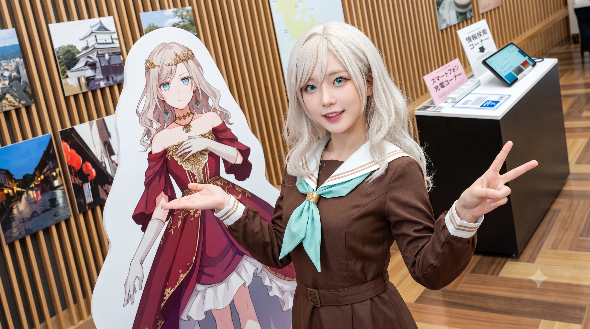
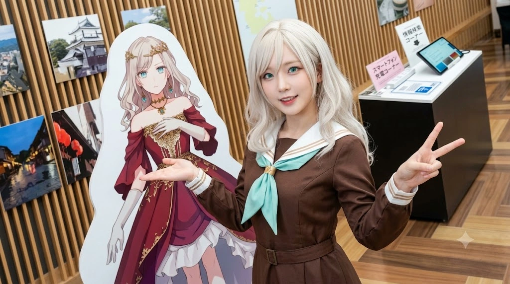

🏰 [공지] 청덕세라스아파트 입주민 대표 회의 소집. 단지 내 '이즈미 기사단' 가입 신청 받습니다.
- 1. 개요
- 2. 세라스 야나기다 릴리엔펠트와의 평행이론
- 3. 생애 및 학창 시절 (기적의 인생 역전 서사)
- 3.1. 부모님의 대서사시와 2012년의 파국: 파독 광부의 눈물, 삼선대 컨닝 사건, 그리고 1년 유급의 진실
- 3.2. 2014년 지독한 가난의 서막과 족포초 마굴의 '혼혈' 따돌림
- 3.3. 구원자 박효빈(대학생)과의 만남, 젠가와 오목의 추억
- 3.4. 동지 하화연과의 만남 (햇볕으로의 구원)
- 3.5. 멘토의 이별 통보와 오열: "보고 싶었단 말이에요!"
- 3.6. 견디지 못한 혐오와 청덕초등학교로의 도피
- 3.7. 사이비 교단의 알박기와 파멸: 전설의 재개발 떡상! (진짜 영애 등극)
- 3.8. 끝없는 엇갈림: "내가 기수들을 이끌고 왔는데!"
- 4. 기적의 재회와 에델노트(Edel Note) 결성
- 5. 안천과학고 생태계와 HIST를 향한 길
- 6. 사건 사고 및 해프닝
- 6.1. 2022년 윤재훈의 패륜 망언 사태와 펜트하우스 극대노
- 6.2. 박효빈 시장실 포옹 미수 대참사와 극우 렉카 참교육
- 6.3. 2026년 시장실 대폭발: 2016년 히드라리스크 대첩의 진실 폭로
- 6.4. "시장님은 밥 못 쏩니다!" 벼락부자 영애의 골드카드 연회
- 6.5. 안천대교 사건: 무너진 페르소나와 피 끓는 절규
- 6.6. 분식집 재회와 영원한 방어막
- 6.7. '정서적 교감' 호소인들의 레스토랑 습격과 엑스칼리버 바게트 참교육
- 6.8. 마계 '평당 아르티엠' 호소인들의 망발과 벼락부자 영애의 알빠노 참교육 (feat. 메이드의 자본주의 팩폭)
- 7. 인간 관계 (리에하스 연합 및 멘토, 가족)
- 8. 여담 (5차원 밈의 총본산)
- 9. 주요 어록
- 10. 관련 문서
- 11. 각주
1. 개요
"주미 님! 저와 함께 서브컬처 동아리를 결성해 주세요! 저는 세라스 님이니까요!"
효빈광역시 안천구에 위치한 명문 안천과학고등학교 2학년에 재학 중인 이과생. 다문화 혼혈이라는 배경과 족포초등학교 시절의 지독한 가난, 따돌림(마굴 같은 환경) 속에서 극심한 상처를 안고 자랐으나, 현재는 집안이 재개발로 벼락부자(쌉부자)가 되면서 엄청난 재력을 보유하게 된 이른바 '청덕동 영애'이다.
작중 'Love Live! Hasunosora Girls' High School Idol Club(하스노소라)'의 105기생 멤버인 세라스 야나기다 릴리엔펠트와 완벽하게 일치하는 기믹, 혼혈 설정, 그리고 압도적인 글래머 체형까지 소름 돋게 똑같은 '현실판 세라스'다. 과거의 결핍과 생명의 은인 박효빈(현 효빈광역시장)을 향한 사무치는 그리움이 방어기제로 작용하여, 평소에는 '세라스 야나기다 릴리엔펠트'라는 평행이론적이고 5차원적인 영애 페르소나를 장착하고 다닌다. 하지만 결정적인 위기 상황이나 동지들이 상처받을 때는 그 페르소나를 집어 던지고 거칠고 뜨거운 본심을 적나라하게 드러내는 입체적인 캐릭터이다.
2008년생이지만 외국(독일) 체류 문제로 적응하느라 1년을 유급하여, 현재 2009년생인 이주미, 임승민과 동급생으로 지내며 효빈시의 거대 오타쿠 친목 연합인 '리에하스 연합'의 핵심 멤버로 활동하고 있다.
2. 세라스 야나기다 릴리엔펠트와의 평행이론
2.1. 독일 혼혈과 성씨까지 똑같은 이름의 굴레 (柳세라 + 릴리엔펠트 = 세라스 야나기다 릴리엔펠트)
유세라가 세라스 야나기다 릴리엔펠트 오시로 각성할 수밖에 없었던 우주적 평행이론의 결정체다. 우선 그녀의 한국 이름은 전주 유씨(柳氏)에 '세라'를 써서 유세라(柳세라)다. 이름 발음부터가 원작 캐릭터인 세라스(Seras)와 판박이인 데다, 원작 세라스의 일본 성씨인 '야나기다(柳田)'와 똑같은 '버들 유(柳)' 자를 쓴다!
그러나 진짜 소름 돋는 화룡점정은 바로 어머니의 성씨다. 원작 세라스가 러브 라이브 시리즈 최초의 독일계 하프(혼혈)로서 '릴리엔펠트(Lilienfeld)'라는 독일 성씨를 가진 것처럼, 유세라의 독일인 어머니(안나 폰 릴리엔펠트, 1981년생) 역시 원작 세라스와 토씨 하나 안 틀리고 똑같은 '릴리엔펠트' 가문 출신인 것이다! 심지어 유세라는 한국과 독일의 복수국적자이기 때문에, 독일 여권에 찍힌 그녀의 실제 법적 성명은 '세라 폰 릴리엔펠트(Sera von Lilienfeld)'다.
즉, 세라가 평소 입에 달고 사는 "이 몸은 찬란한 릴리엔펠트 가문의 영애, 세라스 님입니다!"라는 대사는 오타쿠 여고생의 중2병 망상이나 허세가 아니라, 실제 본인의 모계 성씨이자 독일 여권에 박혀 있는 100% 합법적 팩트(...)다! 안천과고에서 임승민이 "컨셉 좀 작작 해라"라고 태클을 걸었다가 세라가 독일 여권을 꺼내서 이마에 딱 붙여버리는 바람에 할 말을 잃었다는 전설이 있다.
게다가 어머니의 성씨에 붙은 전치사 '폰(von)'은 실제로 독일에서 중세 봉건 귀족(융커 등) 가문의 후예에게만 붙는 칭호다. 즉, 혈통상으로도 진짜 독일 귀족 가문의 외손녀가 맞다. 다만 외가가 2차 세계대전 당시 나치 부역은 끝까지 거부하며 귀족의 지조를 지켰으나, 그 이전인 1920년대 바이마르 공화국 시기의 대공황과 하이퍼인플레이션 때 경제가 문자 그대로 폭망(...)하는 바람에 그 이후로는 지극히 평범한 소시민 집안으로 살아왔다는 웃픈 비하인드가 숨어 있다. [17]
2.2. "작은데 커요" 압도적 볼륨감의 재현
신체적 특징마저 세라스의 복사판이다. 키는 153cm로 또래에 비해 매우 아담한 편이지만, 그 작은 체구와는 극도로 대조적으로 굉장히 글래머러스한 압도적 몸매(B87)를 가지고 있다.
안천과학고등학교 교복 단추가 팽팽해져서 금방이라도 터질 듯이 불쌍해 보일 정도의 볼륨감을 자랑하며, 이 때문에 체육 시간이나 복도에서 주변 남학생들은 물론 여학생들까지 시선을 어디에 두어야 할지 모르게 만드는 우민들 눈을 멀게 하는 원흉이다. [1]
2.3. 5차원을 넘어선 성격 (트라우마가 낳은 방어기제)
원작 세라스가 4차원적인 성격과 엉뚱한 행동으로 주변을 당황하게 하듯, 유세라 역시 상상을 초월하는 5차원적인 성격의 소유자다. 자신을 스스로 "세라스 야나기다 릴리엔펠트"라고 칭하며, 이주미를 볼 때마다 "나의 기사님!"이라 부르며 판타지 소설에 나올 법한 역할극을 시도 때도 없이 시전한다.
하지만 이 기괴한 5차원 성격은 사실 단순한 어그로 콘셉트가 아니다. 족포초 시절 "더러운 혼혈"이라며 끔찍하게 괴롭힘을 당했던 트라우마를 극복하기 위해, 스스로를 "나는 고귀한 판타지 세계의 영애이고, 나를 괴롭히는 저들은 그저 미개한 우민(우민들)일 뿐이다"라고 최면을 걸며 만들어낸 눈물겨운 생존형 방어기제가 성격으로 완전히 정착해버린 결과다. [2]
3. 생애 및 학창 시절 (기적의 인생 역전 서사)
3.1. 부모님의 대서사시와 2012년의 파국: 파독 광부의 눈물, 삼선대 컨닝 사건, 그리고 1년 유급의 진실
훗날 효빈시 서구 상권을 호령하는 벼락부자 영애 유세라가 세상에 태어나기까지는, 한독(韓獨) 양국의 현대사와 아버지 세대의 기적 같은 나비효과가 맞물린 대하드라마급 서사가 존재한다.
3.1.1. 1980년생 복학생 유건우의 대리 효도와 '삼선대 컨닝범(이주미 부친)'이 열어준 기적
한국 토종 소시민이었던 세라의 아버지 유건우(1980년생)가 독일로 교환학생을 가게 된 시점은 현역 군 복무를 마치고 지역 명문 사립 삼선대학교 2학년으로 복학했던 2002년~2003년경(당시 만 22~23세)이었다. 그가 갑작스레 독일행을 결심한 이면에는 아버지(유세라의 친할아버지)의 눈물겨운 사연이 있었다.
세라의 친할아버지는 1960~70년대 서독 노르트라인베스트팔렌주 루르(Ruhr) 탄전 지대(보훔·뒤스부르크·에센 일대)로 파견되어, 섭씨 40도가 넘는 지하 1,000m 막장에서 석탄 가루를 마시며 조국과 가족을 위해 외화를 벌었던 1세대 파독 광부 출신이었다. 할아버지는 타국에서 외롭게 일하던 시절 자신에게 인종차별 없이 따뜻한 밥상을 차려주고 친아들처럼 보살펴 주었던 독일인 은인 부부에게 평생 다시 찾아가 감사를 전하고 싶어 했으나, 2000년대 초반 탄광 후유증과 뇌졸중(중풍)이 겹쳐 전신 마비가 와 병상에서 이동이 아예 불가능한 상태가 되고 말았다.
마비된 몸으로 눈물만 흘리는 아버지의 한(恨)을 대신 풀어드리고 싶었던 효자 복학생 유건우는, 마침 삼선대학교에서 아버지가 일했던 루르 탄전 인근의 명문 대학(보훔 루르 대학교 자매결연 과정)으로 파견하는 교환학생 프로그램을 진행하자 망설임 없이 지원했다. 그러나 당시 병간호와 아르바이트를 병행하느라 학점이 커트라인에 아슬아슬하게 못 미쳤던 유건우는 1차 심사에서 '예비 1번(사실상 불합격)'을 받아 탈락 위기에 처했다. 만약 여기서 끝났다면 유세라는 지구상에 존재하지도 못했다.
그런데 이때 우주가 돕는 기적이 터졌다. 최초 합격자 명단에 있던 학생 중 한 명이 전공 기말고사에서 부정행위(컨닝)를 저지르다 교수에게 현행범으로 적발되어 합격 취소 및 중징계를 처맞는 대참사(?)가 발생하면서, 예비 1번이던 유건우가 기적처럼 막차를 타고 독일로 갈 수 있게 된 것이다!
당시 이주미의 아버지 역시 찢어지게 가난한 집안 형편 때문에 학비를 해결하려면 장학금과 교환학생 국비 지원이 목숨처럼 절실했고, 성적 압박과 벼랑 끝에 몰린 나머지 한순간의 잘못된 선택(컨닝)을 했다가 엄격하기로 소문난 삼선대 학칙에 걸려 모든 자격을 박탈당했다. 이 소식을 들은 이주미의 친할아버지는 벼락같이 노하며 빗자루가 부러져라 아들을 호되게 혼내셨고, 주미의 아버지는 아버지 앞에서 피눈물을 흘리며 뼈저리게 잘못을 뉘우쳤다. 이후 본인이 저지른 과오를 책임지기 위해 낮에는 막노동과 알바를 뛰며 피땀 흘려 직접 학비를 메워야만 했다. (주미 아버지는 현재까지도 이때의 일을 인생에서 가장 부끄럽고 후회되는 흑역사로 꼽는다.)
그런데 캠퍼스에 소문이 퍼져 다른 학생들이 모두 주미의 아버지를 벌레 보듯 피할 때, 유일하게 다가와 따뜻하게 손을 내민 사람이 바로 예비 1번으로 독일에 다녀온 유건우였다. 유건우는 "학우님 덕분에 제가 전신 마비로 누워 계신 아버지의 평생 소원을 풀어드리고 독일의 은인분들께 인사를 드렸으며, 제 평생의 반려자(안나)까지 만났습니다. 학우님에겐 아픈 시련이었겠지만 저와 제 아버지에게는 생애 가장 큰 은인이십니다"라며, 본인의 형편도 넉넉지 않았음에도 진심 어린 감사 인사와 함께 소정의 사례금을 건넸다.
모두가 손가락질할 때 오히려 은혜를 입었다며 고개를 숙인 유건우의 대인배적 위로에 주미의 아버지는 화장실에서 대성통곡하며 완전히 각성했다. 이후 컨닝 따위는 거들떠보지도 않고 피나는 주경야독으로 정직하게 진짜 실력을 증명해 보인 끝에, 칼 같던 삼선대 교수진에게도 개과천선을 인정받아 일부 장학금까지 회복하며 당당하게 졸업할 수 있었다. 그리고 그로부터 약 20년 뒤, 유건우가 그날의 기적으로 얻은 딸 유세라가 중학교 시절 일진들에게 위협받을 때 주미 아버지의 딸인 이주미가 홀연히 나타나 세라를 구해내며 영혼의 파트너(에델노트)가 되었으니, 가히 2대(代)에 걸친 우주적 보은(報恩)의 서사라 할 수 있다. [18]
3.1.2. 루르 탄전의 은인 '베버(Weber) 노부부'와의 눈물겨운 재회와 골든타임
유건우가 예비 1번으로 독일에 입성한 2002~2003년은 말 그대로 하늘이 허락한 마지막 골든타임이었다. 유건우가 병상의 아버지가 마비된 손으로 겨우 쥐여준 낡은 주소록 수첩을 들고 루르 지방을 수소문해 찾아갔을 때, 아버지에게 호의를 베풀었던 독일인 은인 '베버(Weber) 씨 노부부'는 다행히 생존해 계셨기 때문이다. (베버 노부부는 유건우가 다녀간 지 약 5년 뒤인 2007~2008년경 별세하셨다.)
백발이 성성한 베버 노부부는 유건우가 건넨 1970년대 빛바랜 사진과 편지를 보자마자 30년 전 성실했던 한국인 광부 친구를 단번에 기억해 냈다. 노부부는 그가 현재 전신 마비로 병상에 누워 움직이지 못한다는 소식을 듣고는 눈시울을 붉히며 매우 슬퍼했지만, 이내 그 아들이 병든 아버지를 대신해 머나먼 타국까지 찾아와 거실 바닥에서 한국식 큰절을 올리며 감사를 전하자 부둥켜안고 눈물을 흘리며 엄청난 감동을 받았다. 또한 한국에서 병상에 누워 계시던 유건우의 아버지(세라의 친할아버지) 역시 아들이 다녀온 지 약 6년 뒤인 2008년 말~2009년경 별세하셨는데, 돌아가시기 직전인 2008년 6월 26일에 태어난 첫 손녀 유세라의 얼굴을 직접 보고 편안히 눈을 감으실 수 있었다.
3.1.3. 몰락 귀족 가문의 후예, 1981년생 '안나 폰 릴리엔펠트'와 뮌헨 네오나치 혈투
그리고 베버 노부부에게 대리 효도를 완수한 이 교환학생 시절, 1980년생 복학생 유건우는 베버 노부부와는 별개의 인연으로 캠퍼스에서 자신보다 한 살 어린 1981년생 독일 여대생 안나 폰 릴리엔펠트(Anna von Lilienfeld, 세라의 어머니)를 운명적으로 만나게 된다.
앞서 언급했듯 안나의 집안인 '폰 릴리엔펠트' 가문은 과거에는 뼈대 있는 귀족 쪽이었으나, 바이마르 공화국 시절 하이퍼인플레이션으로 경제가 완전히 폭망해버린 이후로는 지극히 평범한 소시민 집안이 되어 있었다. 하지만 가세가 기울었을지언정 2차 세계대전 당시 나치(Nazi) 부역은 끝까지 거부하며 양심과 지조를 지켰던 개념 찬 집안이었기에, 안나 역시 돈이나 권력보다 '인간적인 신의와 용기'를 가장 높이 평가하는 여성으로 자랐다. 그런 그녀의 눈에 마비된 아버지를 대신해 독일 땅까지 찾아와 은인(베버 부부)께 효도를 다하는 한국인 청년 유건우는 그 어떤 귀족보다도 진실하고 멋있는 사람이었다.
두 사람이 부부의 연을 맺게 된 결정적 사건은 2000년대 초반 독일 뮌헨의 어느 으슥한 밤거리에서 벌어졌다. 길거리에서 술에 취해 나치식 경례를 지껄이던 스킨헤드 네오나치(히틀러 충성파 극우주의자) 무리가 아시아인이라는 이유만으로 유건우에게 시비를 걸더니, 이내 곁에 있던 안나에게까지 비열한 성희롱과 몹쓸 짓을 시도한 것이다. 당시 '예비 1번' 턱걸이 출신이라 독일어조차 제대로 못 하던 깡마른 동양인 유학생이었던 아버지는, 도망치기는커녕 피떡이 되도록 두들겨 맞으면서도 온몸으로 어머니를 껴안아 지켜냈다. 이때 아버지는 진짜 캡틴 코리아급 상남자 그 자체였다. 이 미친 용기가 없었다면 세라는 태어나지도 못했다.
[스킨헤드 네오나치] "Hey, süße! (어이 이쁜이!) 이런 냄새나는 동양 원숭이 새끼랑 놀지 말고 우리랑 놀자고! 하일 히틀러!" (강제로 어머니의 손목을 낚아채며 음흉하게 웃는다)
[어머니 (당시 20대 대학생, 81년생 안나)] "Lass mich in Ruhe!! (내버려 둬!! 사람 살려!)"
[아버지 (당시 유학생, 80년생 유건우)] (눈이 완전히 뒤집혀 야수처럼 달려들며) "이 씹새끼들아!! 내 여자한테 손대지 마!!!"
(아버지는 거구의 스킨헤드들에게 선빵을 날렸으나, 이내 처참하게 짓밟히기 시작했다. 묵직한 군화발이 배를 걷어차고 유리병이 머리 위로 깨졌다. 하지만 아버지는 바닥에 쓰러진 어머니의 몸을 자신의 몸으로 완벽하게 덮어 쉘터를 만들었다.)
[스킨헤드 네오나치] "원숭이 주제에 뒈질라고!!" (퍽! 퍽! 자비 없이 아버지의 등과 갈비뼈를 짓밟는다)
[아버지] (입이 터져 피를 철철 흘리고 갈비뼈가 부러져 숨이 턱턱 막히는 와중에도, 예비 1번 출신이라 짧은 독일어 실력으로 수업 시간에 외웠던 단 한 문장을 피를 토하듯 사자후로 내지르며) "Lass sie in Ruhe!! (그녀를 내버려 둬!! 내가 다 쳐맞을 테니까, 이 여자한테는 털끝 하나 건드리지 마!!!)"
당시 입이 터져 피를 철철 흘리고서도 서툰 독일어로 "Lass sie in Ruhe!! (그녀를 내버려 둬!!)"라고 사자후를 내지르며, 경찰의 사이렌 소리가 울릴 때까지 온몸이 부서져라 어머니를 보호했던 그 핏빛으로 얼룩진 든든한 등짝을, 어머니와 반(反)나치 가문인 릴리엔펠트 외조부모님은 도저히 잊을 수가 없었던 것이다.
3.1.4. 2008년 세라의 탄생과 2012년 독일 도피 사태 (그리고 1년 유급의 진실)
그렇게 국경을 초월한 순애보 끝에 한국에서 가정을 꾸린 두 사람 사이에서 2008년 6월 26일, 첫딸 유세라가 태어났다. 사실 세라가 태어났던 2008년 무렵, 아버지의 비디오/DVD 유통 사업은 이미 서서히 사양길에 접어들고는 있었으나, 아직 스마트폰이 세상을 완전히 지배하기 직전이었기에 '그나마 입에 풀칠은 하고 밥술은 뜨며 평범하게 먹고 살 만한' 중산층 수준은 아슬아슬하게 유지하고 있었다.
즉, 일각에서 떠도는 '태어날 때부터 최고급 산부인과 VIP 특실에서 태어난 금수저 영애'라는 소문은 완벽한 낭설이자 훗날의 재력 때문에 덧붙여진 설정 오류(?)다. 실제로는 동네 평범한 산부인과에서 태어났으며, 아버지가 유통업체 사장님 타이틀을 달고 있긴 했지만 실상은 매달 대여점 수금과 재고 관리로 골머리를 앓는 평범한 소상공인에 불과했다. 영애는 무슨, 그냥 빚 없는 게 다행인 평범한 비디오 유통업자 딸내미 1이었다.
다만 금수저가 아니었을 뿐, 첫딸의 탄생만큼은 눈물겨운 축복 그 자체였다. 전신 마비로 병상에 누워 계시던 파독 광부 출신 친할아버지는 돌아가시기 직전 이국적인 은빛 금발과 파란 눈을 가진 손녀 세라를 보며 뜨거운 눈물을 흘리셨고, 아버지가 운영하던 소규모 유통 사무실의 직원들과 소박한 친척들이 십시일반 모은 축하금과 내복 선물을 듬뿍 받으며, 비록 재벌은 아니지만 따뜻하고 화목한 가정의 사랑받는 첫째 딸로서 세상에 첫발을 내디뎠다. 부모님 역시 "우리 세라만큼은 남부럽지 않게 키우겠다"며 희망에 부풀었던 행복한 시절이었다. 이때까지만 해도 본인이 훗날 밑바닥 흙수저로 추락하여 자본주의의 쓴맛을 다 보는 피 튀기는 소년만화(?)급 시련을 겪게 될 줄은 꿈에도 몰랐을 것이다.
하지만 얄궂은 운명과 시대의 거대한 파도는 이 소박한 행복을 오래 내버려 두지 않았다. 바야흐로 세라가 4살 무렵이던 2012년, 애플의 아이폰과 삼성 갤럭시 등 스마트폰의 폭발적인 보급, 그리고 VOD/IPTV의 대중화와 함께 아버지의 비디오/DVD 유통 사업은 사실상 사형 선고를 받아 산소호흡기만 달고 있는 빈사 상태에 빠졌다. 사실상 이때 이미 사업 아이템 자체가 지구상에서 멸종해버린 시한부 선고나 다름없었다.
매일같이 날아오는 빚 독촉장과 텅 빈 창고 속에서 아버지의 스트레스는 극에 달했고, 이는 곧 끔찍한 부부 싸움으로 이어졌다. 타국에서 의지할 곳 없이 가난과 독박 육아에 시달리던 독일인 어머니는 결국 극심한 우울증과 향수병(Homesickness)이 폭발해 버렸다. 이성이 끊어진 어머니는 어린 세라의 손을 잡고 "더 이상은 이 지옥에서 못 버티겠다"며 캐리어를 끌고 인천국제공항으로 향했다. 그야말로 게르만족의 대이동(...)이 일어날 뻔했다. 이혼 도장만 안 찍었지 사실상 별거나 다름없는 파국이었다.
[아버지] (출국장 게이트 앞에서 무릎을 꿇고 어머니의 바짓가랑이를 붙잡고 오열하며) "여보... 안 돼, 제발 가지 마!! 내가 잘못했어! 밤낮으로 노가다를 뛰어서라도, 내 뼈를 갈아서라도 빚 다 갚고 집안 무조건 다시 일으켜 세울게!! 세라야, 아빠 두고 가지 마 ㅠㅠ 내가 다 미안해!!"
[어머니] (눈물이 범벅이 된 채 독어와 한국어를 섞어 소리치며) "Lass mich los! (이거 놔요!) 당신 그 놈의 사업 타령하다가 우리 세라까지 길거리에 나앉게 생겼어! 난 이제 한계야, 내 고향으로 돌아갈 거야!! 더 이상 당신 헛된 꿈에 내 딸을 희생시킬 수 없어!"
[어린 세라] (부모님의 싸움에 겁을 먹고 울먹이며) "파파아... 파파 울지 마아 ㅠㅠ 엄마, 파파 아파해애... 나 파파랑 같이 있을래..."
아버지가 공항 바닥에 무릎을 꿇고 통곡하며 애원했지만, 이미 상처받을 대로 받은 어머니는 결국 세라를 안고 독일행 비행기에 오르고 말았다. 하지만 독일에 도착한 후에도 어머니는 아버지를 향한 이혼 서류를 끝내 접수하지 못했다. 과거 뮌헨에서 자신을 지키기 위해 네오나치들에게 피떡이 되도록 맞았던 남편의 등이 자꾸만 떠올랐기 때문이다.
게다가 독일 친정에 도착한 4살배기 세라 역시 매일 밤 베개를 적시며 "파파 보고 싶어... 파파한테 갈래 ㅠㅠ 파파 혼자 두고 오면 파파가 너무 슬프잖아..."라며 심하게 열병을 앓았다. 이 모든 상황을 지켜보던 세라의 독일인 외조부모님(비록 바이마르 때 가세가 기울어 평범한 소시민으로 살았지만 옛 귀족의 기개와 양심을 간직했던 할아버지, 할머니) 역시 엄격하지만 따뜻한 조언으로 딸의 마음을 돌려세웠다.
[외할아버지] "안나(어머니), 우리 릴리엔펠트 가문은 바이마르 시절 재산을 다 잃고 평범한 집안이 되었을지언정, 나치에게 부역하지 않았고 신의를 저버리지도 않았다! 네 남편 건우는 병든 아버지를 대신해 은인(베버 부부)께 효도를 다하러 왔던 성실한 청년이었고, 널 지키기 위해 네오나치들 앞에서 피를 흘렸던 진짜 사내다. 사업이 망했다고 가정을 내팽개칠 놈이 아니란 걸 네가 제일 잘 알지 않느냐? 한 번의 돈 문제와 실패 때문에 목숨을 걸었던 그 은혜를 헌신짝처럼 저버릴 셈이냐! 우리 가문은 그런 배신을 가르치지 않았다!"
[외할머니] "그리고 세라를 봐라. 저 아이는 한국에서 태어났고, 한국에서 유치원을 다녔다. 아빠를 저렇게 끔찍하게 찾는데 여기서 억지로 떼어놓으면 저 아이의 영혼이 부서질 거다. 여기서 독일어를 조금 가르친다고 해도 저 아이의 뿌리는 결국 한국이야. 세라의 미래와 정서적 안정을 위해서라도, 당장 짐을 싸서 네 남편 곁으로 돌아가렴."
결국 어머니는 아버지에 대한 사랑과 세라의 미래를 위해 다시 한국으로 돌아오기로 결심했다. 아내와 딸이 영영 떠난 줄 알고 폐인이 되어 소주병만 까며 짐승처럼 울부짖던 아버지는, 현관문을 열고 들어온 두 사람을 보자마자 현관 바닥에 쓰러져 통곡했다. 이 사건 이후 아버지는 완전히 각성하여 사업 재건을 위해 미친 듯이 일에 매달리게 된다.
⭐ 1년 입학 유예(유급)의 진짜 이유:
비록 가족은 다시 뭉쳤지만, 이 짧고도 강렬했던 독일 체류는 한창 말을 배우던 4~5세 세라의 언어 발달에 엄청난 대혼란(에러)을 일으켰다. 막 한국어로 입을 떼던 시기에 독일로 넘어가 독일식 언어 체계(게르만어 패치)를 뇌에 먼저 억지로 인스톨(...)해버렸고, 귀국 후 한국 유치원에 돌아왔을 때는 친구들에게 "선생님, Guten Morgen!"이라고 인사할 정도로 한국어를 싹 다 까먹어버린 것이다. 포맷 후 OS 재설치의 부작용이다.
결국 완벽한 한국어 패치 및 정서적 재적응을 위해 초등학교 입학을 1년 유예(유급)할 수밖에 없었고, 이 때문에 2008년생인 세라가 2009년생인 이주미, 임승민과 동급생이 되어 절친으로 엮이는 어마어마한 나비효과를 낳았다. 이 유급이 없었다면 지금의 전설적인 지아센 파티는 존재하지 않았을 것이다. 신의 한 수 스노우볼 1.
3.2. 2014년 지독한 가난의 서막과 족포초 마굴의 '혼혈' 따돌림
부모님의 순애보로 가정을 지켜내며 희망을 품었으나, 얄궂은 운명은 이들을 내버려 두지 않았다. 결국 2년 뒤, 세라가 6살이 되던 해인 2014년, 아버지의 사업이 뼈아픈 최종 부도(파산)를 맞으면서 한때 따뜻한 축복 속에 태어났던 소녀의 가족은 효빈시 서구의 낡고 습한 주택가 반지하 방으로 쫓기듯 이사 와야 했다.
곰팡이 냄새가 코를 찌르고, 비가 오면 물이 새며 밤마다 천장에서 꼽등이와 곱등이가 탭댄스를 추는, 그야말로 지독한 빈곤의 나락이었다. 이름만 릴리엔펠트 영애지 실상은 영화 기생충을 라이브로 찍는 처지였다.
당시 배정받은 학교는 지옥의 족포초등학교. 폐쇄적이고 질 나쁜 문화로 악명 높았던 족포초에서, 이국적인 외모(은발, 벽안)를 가진 데다 1년 늦게 입학한 세라는 전학 첫날부터 심각한 배척과 따돌림을 당했다. 단순한 텃세 수준이 아니라 초등학생이라고는 믿기 힘든 수준의 인종차별이 결합된 악질적인 혐오 범죄에 가까웠다.
"머리 색깔 존나 이상해, 너 마녀 아냐?", "어디서 이상한 냄새 나. 양놈 냄새 아님?", "아빠가 외국인 주워왔냐? 더러운 튀기(혼혈 비하) 새끼"라는 패륜적인 폭언과 이지메가 쏟아졌다. 특히 세라의 독일인 어머니가 학부모 참관 수업에 찾아왔을 때, 족포초의 수준 이하 학부모들과 무능한 교사들마저 뒤에서 수군거리는 미개한 촌극이 벌어졌다.
[수준 낮은 학부모 1] (어머니를 위아래로 훑어보며 대놓고 들리게) "어머, 저 여자가 그 서양 며느리라며? 어휴, 향수 냄새인지 노린내인지 냄새나는 거 아냐? 동네 물 다 흐리네."
[수준 낮은 학부모 2] "애 머리통 꼬라지 좀 봐. 쪼끄만 게 벌써 탈색을 시킨 거야? 가정 교육 싹수가 노랗네, 노래. 내 새끼 근처에 못 가게 해야지."
[무능한 담임 교사] (말리기는커녕 은근슬쩍 동조하며) "어머니~ 한국어는 할 줄 아시죠? 알림장은 읽으실 줄 아나요? 애가 말을 잘 못 알아듣던데 집에서 교육 좀 똑바로 시키세요~"
어린 세라는 이 잔인한 시선들을 견디다 못해 아예 책을 덮고 학업을 포기해버렸다. 부모님이 속상할까 봐 집에서는 밝은 척했지만, 학교에서는 선생님의 지시도 완전히 무시하고 수업 시간에 책상에 엎드려 마음의 문을 굳게 닫아버렸다. 쉬는 시간마다 화장실 칸에 숨어 귀를 막고 울었으며, 방과 후에는 유일한 도피처였던 엘린지역아동센터(지아센) 구석에 혼자 웅크려 겉돌아야만 했다. 이때 세라의 멘탈은 이미 가루가 되어 흩어지기 일보 직전이었다.
3.3. 구원자 박효빈(대학생)과의 만남, 젠가와 오목의 추억

지옥 같던 족포초 생활을 버티게 해준 구원자 효빈 쌤의 단어장에 낙서를 하며, 세상에서 가장 환하게 웃던 여덟 살 소녀의 모습.
그 지옥 같은 지아센에서 겉돌던 그녀를 구원해 준 사람은 당시 사회복무요원 입대를 앞두고 15학번 파란색 과잠을 입은 채 근로장학 멘토링을 하던 대학생 박효빈이었다. 빛효빈 강림
박효빈 본인 역시 필리핀 어머니를 둔 다문화 가정 출신이었기에, 세라가 겪는 혼혈의 아픔과 족포초의 쓰레기 같은 문화를 누구보다 잘 이해하고 뼈저리게 공감했다. 첫날부터 다른 아이들이 낯을 가릴 때도, 세라는 효빈의 커다란 손을 덥석 잡고 "선생님, 저랑 토끼 인형 놀이 해줘요!"라며 완벽한 '껌딱지 모드'로 들러붙는 폭풍 애교를 선보였다.
하지만 영락없는 애교쟁이인 줄만 알았던 세라에게도 남모를 굴곡이 있었다. 어느 날 세라가 인사도 없이 구석에 숨어 "저한테 오지 마세요. 쌤이랑 안 놀 거예요"라며 차갑게 얼어붙은 목소리로 효빈을 밀어낸 날이 있었다. 단순한 투정인 줄 알았던 박효빈은 세라의 손등에 난 상처를 보고 무릎을 꿇고 다가갔다. 세라는 그제야 오열하며 "애들이 화장실에서 저한테 걸레 빤 물 뿌렸어요... 제가 엄마 닮아서 외국인이라 진짜 더러워서 그래요...?"라며 참았던 절규를 토해냈다.
그 끔찍한 고백에 피가 거꾸로 솟는 분노를 삼킨 효빈은, 세라의 작은 손을 꽉 쥐고 따뜻한 체온을 불어넣었다.
"너 절대로 안 더러워. 네 은빛 머리칼도, 파란 눈동자도 보석처럼 반짝이고 예쁜 거야. 걔들이 비겁해서 질투하는 것뿐이야. 쌤도 다문화 가정 출신이라 네 맘 다 알아. 쌤이 센터에 있는 한, 그 어떤 누구도 세라 손끝 하나 못 건드리게 다 지켜줄 거야. 약속할게."
이 진심 어린 위로에 세라는 효빈의 과잠 품에 얼굴을 묻고 참아왔던 눈물을 쏟아냈다. 그리고 모두가 돌아간 뒤, 쓰리잡으로 허리가 끊어질 듯 아파왔음에도 티를 내지 않고 원목 젠가를 일부러 무너뜨려 준 효빈 덕분에 세라는 "아하하! 쌤 진짜 바보야! 그걸 건드리면 어떡해요! 쌤 똥쟁이 맞네!"라며 찬란한 웃음을 되찾을 수 있었다.
3.4. 동지 하화연과의 만남 (햇볕으로의 구원)
이 어둡고 우울했던 지아센 시절, 세라에게 손을 내밀어 준 또 다른 은인이 있었다. 바로 병마와 싸우느라 학교를 거의 다니지 못해 차상위계층으로 전락했던 동기, 하화연(히노시타 카호 오시)이었다. 빛화연 강림 2
원작에서 카호와 세라스가 '병원 친구'로 인연을 맺었던 것처럼, 현실에서는 지아센 구석에서 웅크리고 있던 세라에게 화연이 먼저 다가갔다. 화연은 자신이 병실에 갇혀 지내야 했던 경험을 털어놓으며, 혼혈이라는 이유로 우울해하는 세라의 손을 꽉 잡았다. "세라 쨩! 내가 병원에 오래 있어서 아는데, 가만히 우울해하면 마음의 병균이 더 좋아해! 나랑 같이 햇볕 쬐면서 뛰놀자 큥!"
박효빈 쌤이 든든한 물리적 방패막이가 되어주었다면, 하화연은 세라의 차가운 멘탈에 햇볕을 비춰준 따뜻한 구원자였다. 화연이 세라를 억지로 양지로 끌어내어 같이 뛰놀게 만든 덕분에, 두 사람은 평생의 절친이 되었고 지금까지도 서로의 멘탈을 챙겨주는 완벽한 '카호세라'의 상호 구원 서사를 완성했다. [3] 이게 바로 진정한 백합 쌍방 구원이다
3.5. 멘토의 이별 통보와 오열: "보고 싶었단 말이에요!"
하지만 이 평화는 박효빈이 사회복무요원 복무를 위해 지아센 근로장학을 완전히 종료하면서 산산조각 났다. 어딜 가나 군대가 문제다. 마지막 날, 박효빈이 "이제 쌤은 나라의 부름을 받고 군대(대체복무) 가야 해"라고 조심스레 말하자, 세라는 박효빈의 바짓가랑이를 붙잡고 눈물을 펑펑 쏟으며 매달렸다.
[박효빈] "세라야... 미안해. 하지만 네가 진짜 힘들 땐 꾹 참지 말고 꼭 부모님한테 말씀드려야 해. 족포초 쓰레기 같은 선생들한테는 절대 말하지 말고. 스스로 용기를 내서 네 목소리를 내야 이 지옥에서 벗어날 수 있어. 쌤처럼 바보같이 혼자 6년 동안 썩지 말고... 부모님 밤늦게 오신다고 눈치 보지 말고 꼭 말해. 알았지?"
세라는 겉으로는 "쌤이 제일 재밌단 말이에요!"라며 4차원적으로 칭얼댔지만, 그 속내는 사실 '쌤이 가면 날 지켜줄 사람이 없잖아요, 나 혼자 어떻게 버텨요'라는 극도의 두려움과 애정이 섞인 절규였다. 부모님이 밤늦게까지 고생하는 걸 알아서 선뜻 학교폭력을 당하고 있다는 말조차 못 했던 착하고 주눅 든 아이였기 때문이다.
박효빈 역시 집으로 돌아가는 버스 안에서 '내가 저 아이를 너무 보호하기만 해서 자립심을 앗아간 게 아닐까? 내가 떠나면 저 험한 족포초에서 세라가 어떻게 버틸까...'라며 지독한 자책감과 깊은 시름에 잠겨야만 했다. [4]
3.6. 견디지 못한 혐오와 청덕초등학교로의 도피
박효빈 쌤이 떠나자, 방패막이가 사라진 일진들의 괴롭힘은 봇물 터지듯 다시 쏟아졌고 수위는 더 악랄해졌다. 아버지는 한국인이지만 어머니가 독일인이라는 이유만으로 "더럽다", "꺼져라"며 모욕을 당한 세라는, 화장실에 갇혀 오물 테러를 당한 날 견디다 못해 결국 박효빈의 마지막 조언을 떠올렸다.
부모님이 고생하는 것을 알아 꾹꾹 참아왔던 세라는, 결국 그날 밤 일과를 마치고 돌아온 독일인 어머니에게 자신이 학교에서 당한 모든 끔찍한 수모를 오열하며 털어놓았다. 딸의 참혹한 상황을 알게 된 부모님은 억장이 무너지는 슬픔과 분노를 삼키며 즉시 빚을 내서라도 이사를 결심했고, 3학년 때 세라는 도망치듯 서구 청덕초등학교로 전학을 가게 되었다. 빤스런이 아니라 전술적 후퇴다. 다행히 학군이 상대적으로 양호하고 개방적이었던 청덕초에서는 좋은 친구들을 만나 무사히 적응하며 상처를 치유할 수 있었다.
3.7. 사이비 교단의 알박기와 파멸: 전설의 재개발 떡상! (진짜 영애 등극)
세라가 초등학교 고학년이 되었을 무렵인 2019년 말경, 한국 부동산 역사상 전무후무할 기적 같은 인생 역전(로또)이 일어났다. 사실 이 기적의 씨앗은 세라가 태어나기도 한참 전인 2000년으로 거슬러 올라간다. 이 20년의 서사는 그야말로 피 말리는 롤러코스터이자 효빈시 부동산 잔혹사의 축소판이었다.
3.7.1. 지옥문을 연 2000년의 선택: 사양산업과 초역세권 맹지의 환장할 콜라보
당시 세라의 집안(파독 광부로 평생 근검절약했던 친할아버지와 가업을 이어받은 아버지 유건우)은 잘나가던 비디오테이프 및 DVD 유통, 그리고 대여점 자재 공급망을 쥐고 있었다. 당시 최대의 인구 밀집 구역이자 대형 수요처였던 과진동과 당선동으로의 납품이 용이하다는 점에 착안해, 치안이 불안정한 슬럼가라 땅값이 헐값이던 청덕동 한복판의 대형 창고 부지를 덜컥 매입했다. 당시만 해도 "나중에 5호선 전철만 뚫리면 여기가 물류의 중심이 될 것"이라는 원대한 꿈이 있었기 때문이다.
하지만 이 선택은 가족의 인생을 시궁창으로 처박는 지옥문이 되고 말았다. 2000년대 중후반부터 효빈시 서구 인구는 끝없는 폭락을 거듭했고, 영원할 줄 알았던 과진동·당선동 상권도 함께 무너져 내렸다. 설상가상으로 2011년에 드디어 기다리고 기다리던 5호선(청덕공원역 등)이 개통되어 완벽한 '초역세권'이 되었음에도 불구하고, 부지 바로 옆에 똬리를 튼 사이비 종교 단체가 진입로를 완전히 틀어막고 깽판을 치는 바람에 역세권의 이점은커녕 매일 길바닥에 버리는 물류비용과 유류비만 산더미처럼 쌓여갔다.
무엇보다 시대의 변화가 가장 잔인했다. 2010년대에 접어들며 초고속 인터넷 망을 통한 IPTV와 VOD 서비스가 가정집을 장악했고, 스마트폰마저 보급되자 비디오/DVD 대여 사업은 말 그대로 '시장 자체가 지구상에서 증발'해버리는 멸망을 맞이했다. 말 그대로 타노스 당해버렸다. 수만 장의 재고가 쌓인 청덕동 창고는 파리만 날리는 폐허가 되었고, 결국 2014년, 세라가 겨우 6살이 되던 해 아버지는 최종 파산 선고를 받고 말았다. 수십억의 자산을 굴리던 집안은 하루아침에 빚잔치를 벌인 뒤, 곰팡이가 피고 꼽등이가 출몰하는 서구의 낡은 반지하 방으로 쫓겨나며 지독한 빈곤의 나락으로 떨어졌다. [5]
3.7.2. 2014년 부동산의 굴욕: "여긴 사이비 무덤터야!"
"그럼 그 초역세권 청덕동 창고 땅이라도 팔아서 빚을 갚으면 되지 않았나?" 싶겠지만, 팔고 싶어도 단돈 만 원에조차 팔 수가 없는 최악의 저주받은 맹지(盲地)였다. 그리고 이때 땅이 안 팔린 것은 결과적으로 유세라 가문 역사상 최고의 잭팟을 터뜨린 신의 한 수가 되었다.
당시 청덕동 일대는 2012년부터 대대적인 재개발 떡밥이 돌며 건설사들이 눈독을 들이고 있었으나, 하필 세라 아버지의 부지 바로 옆에 악명 높은 극우 성향의 초대형 사이비 종교 단체가 떡하니 본진을 삼고 있었기 때문이다. 이 미친 사이비 교단은 청덕 다이버시티 부지 일대의 재개발을 결사반대하며, 포크레인 앞에 드러눕기, 용역들과의 화염병 투척전, 신도들을 동원한 24시간 철야 쇠사슬 농성 등 온갖 기괴하고 폭력적인 알박기를 시전하고 있었다. 역이 바로 코앞에 있는데도 들어갈 길이 없는 기형적인 상태가 수년째 방치된 것이다.
[아버지] "김 사장님... 제발 부탁드립니다. 저 진짜 사채업자들한테 목숨이 위태로워요. 5호선 청덕공원역 바로 앞 창고 부지, 시세의 반의 반값... 아니, 그냥 던질 테니까 평당 얼마라도 쳐서 제발 넘겨만 주십시오."
[황금 부동산 업자] "아이고 유 사장! 아저씨 진짜 양심이 있소, 없소?! 역 앞이면 뭐해! 2011년에 역 뚫렸을 때부터 진입로를 그 미친 사이비 교주 새끼들이 바리케이드 치고 똥물 뿌리고 지랄 발광을 해서 1군 건설사들도 다 도망간 거 뻔히 알면서! 거기가 땅이야? 그건 맹지를 넘어서 그냥 저주받은 사이비 무덤터야!"
[황금 부동산 업자] "이딴 쓰레기 땅은 복비는커녕 내 사무실 재수만 옴 붙으니까 소금 뿌리기 전에 당장 썩 나가요! 에라이, 퉤!"
이처럼 5호선 역세권이라는 미친 입지에도 불구하고, 저 미친 사이비 집단의 똥고집과 폭동 탓에 세라네 땅은 거래 자체가 완전히 동결되었다. 결국 유일한 자산이었던 땅을 팔아 푼돈이라도 건지려던 마지막 희망조차 산산조각 난 아버지는, 그 후로도 몇 년간 이 저주받은 맹지 때문에 빚투성이의 가난 속에서 피눈물을 흘리며 뼈가 삭는 고생을 해야만 했다. (물론 만약 이때 이 악덕 업자들에게 헐값에라도 팔아넘겼다면 세라네 가족은 지금도 반지하에서 곰팡이와 싸우며 가난에 허덕였을 것이다. 역시 인생사 새옹지마다.) 심지어 주변 구역만 찔끔찔끔 쪼개기 개발이 진행되는 동안, 세라네 땅은 마치 도심 한가운데 버려진 고도(孤島)처럼 흉물스럽게 방치되어야만 했다.
3.7.3. 2016년 제2의 파탄 위기: 독일인 아내의 '바이마르 PTSD' 극대노와 이혼 서류
반지하에서의 끔찍한 가난 속에서, 가정이 완벽하게 공중분해 될 뻔한 초대형 사건이 또 터졌다. 비디오 사업으로 쫄딱 망해 일용직을 전전하던 아버지가, 어느 날부터인가 당시 효빈시 시장이었던 김성민의 '덕후/서브컬처 친화적 도시 개발 기조'를 미친 듯이 파고들기 시작한 것이다. (참고로 훗날 시장이 되는 박효빈은 이때 세라와 지아센에서 젠가를 하던 가난한 대학생 멘토 시절이었다.) 아버지는 밤마다 기름때 묻은 작업복을 입은 채 "이 알박기만 풀리면, 이 5호선 초역세권 부지에 서브컬처 전용 상업 인프라와 굿즈 숍 성지를 짓겠다"라는 상상을 초월하는 사업 계획서를 독일인 아내(어머니 안나 여사)에게 철저히 비밀로 한 채 몰래 작성하며 제2금융권 대출까지 알아보고 있었다.
그러나 꼬리가 길면 밟히는 법. 우연히 장판 밑에 숨겨둔 대출 상담 서류와 '청덕 아키하바라(가칭) 마스터플랜'이라는 기괴한 오타쿠 상권 기획서를 발견한 어머니는 그야말로 이성이 끊어지고 말았다. 어릴 적부터 조부모님께 "우리 릴리엔펠트 귀족 가문이 왜 망했는지 아느냐? 바이마르 공화국 시절 가치도 없는 종이 쪼가리(폭락한 지폐와 채권)를 믿다가 한순간에 소시민으로 추락했기 때문이다!"라는 피 맺힌 경제 조기교육을 받고 자란 안나 여사에게, 남편이 장판 밑에 숨겨둔 '만화 그림 상가 기획서'와 사채 서류는 곧 1923년 바이마르의 휴지 조각 마르크화와 완벽하게 겹쳐 보였던 것이다! 어머니 내면에 잠들어있던 게르만 전사의 분노와 바이마르 경제 폭망 PTSD가 동시에 각성했다.
[어머니] (기획서를 아버지 얼굴에 집어 던지며) "Bist du verrückt geworden?!!(당신 미쳤어요?!!)"
[아버지] "여, 여보!! 내 말 좀 들어봐!! 시대가 변했어! 이제 비디오가 아니라 오타쿠, 아니, 서브컬처가 돈이 되는 시대라고! 김성민 시장님도 정책적으로 팍팍 밀어주고 있단 말이야!!"
[어머니] "말도 안 되는 소리 지껄이지 마!! 우리 가문이 옛날 바이마르 때 쓸모없는 종이 쪼가리 붙잡고 있다가 어떻게 망했는지 내가 귀에 피가 나도록 얘기했잖아!! 당신 그 망할 비디오 쪼가리 때문에 우리 세라가 족포초에서 혼혈이라고 쓰레기 취급받으면서 화장실에서 울고 있는 거 안 보여요?! 겨우 일용직으로 입에 풀칠하는 주제에 또 나 몰래 빚을 내서 이상한 만화 그림 쪼가리 장사를 하겠다고?! 당장 이혼 서류에 도장 찍어요! 난 세라 데리고 독일 대사관 가서 본국으로 돌아갈 테니까!!"
이 사건으로 인해 부부는 법원 이혼 조정실 문턱까지 갔으나, 아버지가 "내 목숨을 걸고 이번 한 번만, 내 모든 걸 쏟아서 가정을 다시 살려내겠다"며 빗속에서 무릎을 꿇고 3박 4일간 빌고 또 빈 끝에야 어머니가 이혼 서류를 찢어버리며 가까스로 파국을 면할 수 있었다. 이때 아버지가 이혼당했다면 지금의 영애 유세라는 존재하지 않았을 것이다. 여러모로 신의 한 수 스노우볼 2.
3.7.4. 2018년, 기적의 시작: 악인들의 자멸과 사이비 내분 사태
절대 풀리지 않을 것 같던 지옥의 알박기에 균열이 간 것은 2018년이었다. 악인은 반드시 그들의 탐욕으로 자멸한다는 격언이 현실로 이루어졌다.
그렇게 굳건하게 쇠사슬을 감고 버티던 극우 사이비 교회 내부에 치명적인 권력 다툼과 자금 횡령 사태가 터져버린 것이다! 교주의 첫째 아들과 수석 장로가 수백억 대의 헌금 은닉처(비자금)를 놓고 지들끼리 멱살을 잡고 파벌 싸움을 벌이다가, 급기야 눈이 뒤집혀 서로의 횡령 장부와 불법 성상납 리스트가 담긴 USB를 언론사와 검찰에 셀프 폭로해 버리는 희대의 촌극을 벌였다. 완벽한 팝콘각.
이 미친 자폭 스위치 덕분에 경찰청 지능범죄수사대와 국세청이 교회 본부를 압수수색으로 박살 냈고, 그동안 숨죽이고 있던 피해 신도들이 집단으로 소송에 나서며 교단은 말 그대로 쑥대밭이 되었다. 법원은 교주와 지도부를 전원 구속시키고 무려 500억 원대에 달하는 징벌적 과징금과 추징금을 때려버렸다. 결국 이 어마어마한 벌금을 감당하지 못한 사이비 교단은 2019년 말 완전히 공중분해되며, 그들이 악착같이 움켜쥐고 있던 청덕동 땅을 강제로 경매에 토해내고 파멸(멸망)했다.
3.7.5. 2019년 전설의 잭팟: 벼락부자 등극과 부동산 사이다 참교육
그 지긋지긋한 흉물이 뜯겨 나가자마자, 효빈시 부동산 시장은 그야말로 지진이 났다. 원래부터 5호선 청덕공원역 초역세권에, 십자(十) 교차로를 끼고 있던 개씹사기 1티어 입지였던 세라네 부지와 인근 교단 부지는, 그동안 침 흘리며 대기하고 있던 1군 대형 건설사들과 효빈도시공사가 눈에 불을 켜고 달려들며 전면 재개발(청덕 다이버시티 아파트 및 초거대 상업 몰)이 초고속으로 확정되었다!
이 소식을 반지하 방 고물 TV 뉴스로 접한 날, 세라네 가족은 서로 부둥켜안고 오열했다. 거의 20년을 썩어가던 똥값 땅이 하룻밤 사이에 부르는 게 값인 천문학적인 가치의 금싸라기 부지로 수직 상승한 것이다.
세라 아버지는 단순히 땅을 건설사에 넘기고 현금만 챙기지 않았다. 그는 2016년 이혼 위기까지 겪으며 목숨 걸고 구상했던 '서브컬처/덕후 상권 마스터플랜'을 1군 건설사 협상 테이블에 던졌다. 효빈시의 덕후 친화 정책과 완벽하게 시너지를 낼 수 있다고 설득한 끝에, 아버지는 막대한 토지 보상금은 물론 '청덕 다이버시티몰'의 프리미엄 상가 알짜 지분율을 싹쓸이하는 조건으로 계약을 체결했다.
결과는 단군 이래 최고의 대적중이자 메가 히트(초대박)였다. 다이버시티몰은 효빈시 서브컬처의 심장으로 떠올랐고, 각종 애니플러스 숍, 굿즈 팝업스토어, 테마 카페가 입점하며 쏟아지는 임대료만으로도 아버지는 순식간에 수백억 대 자산가(갓물주)로 등극했다. 쥐가 파먹던 반지하를 탈출한 유세라는 하루아침에 '프리미엄 청덕세라스아파트' 최상층 펜트하우스(28층/35층급 특화세대)에 거주하는 진짜 재벌집 영애가 되었다. 1920년대 바이마르 공화국 시절 날아갔던 외가 '폰 릴리엔펠트' 가문의 부(富)가 100년 만에 대한민국 효빈시 청덕동에서 오타쿠 상가로 완벽하게 부활한 순간이었다!
⭐ 통쾌한 ㅈ까 참교육: 가장 백미는 이 재개발 대박 소식이 뉴스에 도배된 직후였다. 2014년에 "이딴 쓰레기 무덤터 땅 안 받는다, 당장 소금 뿌리기 전에 꺼져라"라며 세라 아버지를 벌레 보듯 내쫓았던 '황금 부동산'을 비롯한 인근 중개업자들이 염치도 없이 최고급 한우 세트와 양주를 들고 펜트하우스 앞으로 기어 온 것이다.
그들은 문밖에서 무릎을 꿇고 "유 회장님! 저희가 그때 눈이 삐었었습니다! 제발 청덕 다이버시티몰 1층 황금 자리에 저희 부동산 하나만 입주하게 자비를 베풀어 주십시오!"라고 손발이 닳도록 구걸했다.
하지만 세라 아버지는 펜트하우스 인터폰을 켜고 차갑게 얼어붙은 목소리로 단 한 마디를 꽂아버렸다.
"그때 내 땅이 사이비 교주 무덤터라고 했지? 그럼 평생 묏자리나 보러 다니십쇼. 당신 같은 버러지들한테 내줄 상가 화장실 한 칸도 없으니까, 당장 양주병 들고 ㅈ까고 꺼져."
이후 보안요원들을 호출해 그들을 로비 밖으로 내동댕이치며 완벽하고도 짜릿한 복수극을 완성했다.
3.7.6. 영애의 내려다봄: 족포초등학교의 비참한 최후
한편, 세라가 이토록 끔찍한 차별과 이지메를 당하도록 방치했던 마굴 족포초등학교는 폐쇄적이고 쓰레기 같던 악습의 업보를 고스란히 돌려받았다. 재개발로 주변 학군이 정리되자, 정상적인 사고를 가진 학부모들이 "저런 일진 양성소에는 절대 내 새끼를 보낼 수 없다"며 인근 청덕초나 타 지역으로 집단 전학(런) 러시를 감행한 것이다.
학령인구 감소의 직격탄에 학부모들의 전면 보이콧까지 겹치며 족포초는 신입생이 '0명'이 되는 굴욕을 겪었고, 결국 2024년에 폐교 처분을 받으며 역사 속의 흉물로 완전히 사라지고 말았다.
어느 날 저녁, 펜트하우스의 야외 테라스에서 최고급 포도 주스를 와인잔에 담아 마시며 철거 공사가 한창인 족포초의 뼈대를 내려다보던 유세라는, 특유의 오만하고도 시원한 5차원 영애 톤으로 비웃음을 흘렸다.
"오호호호! 보셨나요, 주미 님! 저 미개한 우민들을 길러내던 수용소가 마침내 포크레인의 심판을 받아 무너지고 있군요! 참으로 아름다운 밤입니다!"
이로써 혼혈이라는 이유로 가난의 밑바닥에서 짓밟히던 어린 소녀는, 막대한 자본력과 압도적인 멘탈리티로 자신을 괴롭힌 모든 환경을 발아래에 두는 진정한 '효빈시의 릴리엔펠트 영애' 서사를 완벽하게 완성해 냈다.
3.8. 끝없는 엇갈림: "내가 기수들을 이끌고 왔는데!"
집안이 벼락부자가 된 것은 기뻤지만, 치명적인 문제가 하나 발생했다. 경제적 취약계층만 다닐 수 있었던 당시 지역아동센터 규정 때문에 유세라는 어쩔 수 없이 눈물을 머금고 센터를 떠나야 했던 것이다. 자본주의의 쓸데없는 팩폭.
사실 박효빈은 대체복무 이후에도 연가를 내고 연 2회씩 지역아동센터를 꾸준히 찾아왔다. 하지만 신은 세라에게 너무나 가혹해서 기묘한 머피의 법칙(감기, 병원 진료 등) 때문에 번번이 엇갈리기만 했다. 이쯤 되면 우주가 나서서 억까하는 수준이다.
어느 봄날, 덥수룩한 머리를 한 채 번개 방문을 했던 효빈이 아이스크림과 과자를 남겨두고 간 30분 뒤에야 헐레벌떡 들어온 세라는 냉동실 앞에 주저앉았다. 효빈이 딸기 아이스크림 통에 꾹꾹 눌러 쓴 "세라야, 쌤 단어장에 또 똥쟁이 그리러 와야지!"라는 쪽지를 쥐고 세라는 "바보 쌤... 얼굴이라도 보고 가지..."라며 눈물을 뚝뚝 흘렸다.
효빈 쌤의 얼굴을 못 본 서러움에 냉동실 앞에서 훌쩍이는 세라에게, 팩폭 장인이었던 중학생 언니 나수미가 다가와 털썩 주저앉았다.
"꼬맹이, 아이스크림만 퍼먹으면 배탈 나. 이거 수밍이 어제 새벽까지 반죽 쳐서 구운 비밀 쿠키거든? 특별히 너한테만 양보한다."
수미는 따뜻한 버터 쿠키를 쥐여주며 세라의 눈물을 닦아주었다. 그리고 일진들의 차별에 대해 "네 눈이랑 머리칼이 보석 같아서 질투하는 거야. 다음에 또 그 새끼들이 헛소리하면, 언니가 빵 만들 때 쓰는 묵직한 밀대 들고 찾아가서 대가리 다 빻아버릴 테니까 기죽지 마!"라며 살벌하면서도 든든한 친언니 같은 위로를 건네주었고, 세라는 그제야 눈물을 닦고 배시시 웃을 수 있었다.
이후 센터마저 떠나야 했던 세라는, 박효빈이 대학교에 복학하거나 계약직 복지사로 일한다는 소식을 들을 때마다 이주미, 도소영, 유초애, 하화연 등 '지아센 5인방(원정대)'을 이끌고 찾아갔다. 그러나 안타깝게도 그때마다 박효빈은 과도한 쓰리잡과 학업, 바쁜 스케줄로 인해 자리를 비워 끝내 만나지 못했다. 텅 빈 자리 앞에서 세라는 "아아니... 어째서?! 내가 이렇게 기수(기사님)들을 이끌고 왔는데 왜 또 안 계신 건데요정말정말!"이라며 바닥에 주저앉아 오열하기도 했다. 이런 끝없는 엇갈림의 연대기는 훗날 시장실 재회의 폭발적인 에너지로 승화된다.
4. 기적의 재회와 에델노트(Edel Note) 결성
4.1. 일진들의 추악한 접근과 "나는 세라스 님입니다!"
세라가 청덕중학교에 진학하고 재개발로 벼락부자가 되었다는 소문, 그리고 어릴 적 왜소했던 몸매가 폭발적으로 발육하여(...) 압도적인 B87의 글래머 미소녀가 되었다는 소문이 돌자, 과거 족포초에서 그녀를 괴롭히던 쓰레기 일진 새끼들이 냄새를 맡고 태세 전환을 하며 친한 척을 빙자해 찾아왔다.
일진들은 하교하는 세라의 길을 막아서며 음흉하게 어깨에 손을 올렸다. "야, 유세라! 오랜만이다? 와, 너 어릴 땐 찐따 같았는데 몸매 좆되게 좋아졌네. 이제 돈도 많다며? 우리랑 PC방 가서 좀 놀래? 오빠들이랑 으슥한 데서 재밌는 거 좀 할래?"
일반적인 여학생이라면 공포에 질렸겠지만, 박효빈 쌤의 빈자리를 서브컬처(애니메이션)로 달래며 이미 중증 오타쿠로 진화해버린 세라의 멘탈 회로는 남달랐다. 세라는 갑자기 눈을 반짝이며 양손을 허리에 올리고 기괴한 5차원 롤플레잉을 시전했다.
"무슨 무례한 소리인가요, 천한 우민들! 이 몸은 찬란한 릴리엔펠트 가문의 영애, '세라스 님'입니다! 더러운 손으로 감히 고귀한 영애의 옥체를 만지려 들다니, 당장 단두대로 사형에 처하겠습니다!"
갑작스러운 광기 어린 오타쿠 대사에 일진들은 순간 뇌 정지가 와서 "뭐야 이 미친 년은..."이라며 당황하고 있었다.
4.2. 기사님 '이주미'의 강림과 구원 서사
그때, 170cm의 훤칠한 장신에 쇼트커트를 한 여학생이 무심한 표정으로 걸어와 일진 무리의 어깨를 퍽 밀치며 세라의 앞을 가로막았다. 바로 과거 족포초 시절 지아센에서 데면데면하게 얼굴만 알던 동기이자, 아버지 세대부터 삼선대학교의 인연으로 묶여 있던 운명의 단짝 이주미였다. (당시 주미 역시 체구가 컸기에 일진들로부터 세라를 완벽하게 가려주었다.) [8]
[일진] "뭐야 이 멀대 같은 년은? 뒤질래?!"
[이주미] (일진의 멱살을 잡아 벽에 꽂아버리며) "뒤질래는 네가 뒤질래? 족포초에서 깝치던 버릇 아직도 못 고쳤냐? 경찰 부르기 전에 꺼져."
압도적인 피지컬과 서늘한 살기에 쫄아버린 일진들은 욕을 내뱉으며 도망쳤다. 주미가 뒤를 돌아보며 "괜찮냐?"라고 묻는 순간, 세라의 눈에는 주미의 뒤로 눈부신 후광이 비치며 완벽한 '기사님'의 형상이 겹쳐 보였다. 원작 세라스가 이즈미를 처음 보고 매료되었던 그 서사가 현실에서 완벽하게 재현된 것이다. [6]
이 사건을 계기로 세라는 주미의 완벽한 '껌딱지'가 되었고, 두 사람은 안천과학고등학교에서 재회하며 'Edel Note(에델노트)'라는 서브컬처 동아리를 결성해 쌍방 구원 서사를 완성하게 된다.
5. 안천과학고 생태계와 HIST를 향한 길
5.1. 1년 유급의 진실 (독일 체류와 08년생 2학년)
유세라는 본래 2008년생으로 주미, 승민보다 1살 연상이어야 맞다. 하지만 유아기 및 중학교 무렵 어머니의 고향인 독일 체류와 외국 생활 적응 문제로 학업이 1년 늦어졌고, 자연스럽게 1년을 유급하여 2009년생들과 함께 학교를 다니게 되었다.
덕분에 학년은 2학년이지만 나이는 18세다. 본인은 이를 두고 "유럽 귀족 영애의 여유로운 안식년(Gap year)이었습니다"라며 뻔뻔하게 포장한다.
5.2. "국어가 쪼~금 딸려요!" 조기졸업 실패와 고3 완주
안천과학고에 진학할 정도로 수학과 과학, 특히 독일어 능력을 바탕으로 한 논리 연산 능력은 뛰어나다. 목표 역시 효빈시 최고의 이공계 대학인 효빈과학기술원(HIST)이다.
과고생의 국룰인 2학년 조기졸업을 노려볼 만했지만, 치명적인 단점이 하나 있었다. 외국 생활과 오타쿠 매체(일본어 번역체)에 절여진 언어 습관 탓에 국어(언어 영역) 성적이 심각하게 딸린다는 것이다. 비문학 지문을 읽다가 "이건 릴리엔펠트 가문의 수치입니다!"라며 헛소리를 하곤 한다. [7]
결국 국어 내신 점수 미달로 조기졸업에 실패했고, 기사님인 이주미와 함께 고3까지 낭만 있게(?) 학교를 완주하기로 결심했다.
6. 사건 사고 및 해프닝
6.1. 2022년 윤재훈의 패륜 망언 사태와 펜트하우스 극대노
2022년 효빈시장 선거 당시 TV 토론회를 시청하며 이성이 증발해 버린 것은 도소영이나 하화연뿐만이 아니었다. 평소 '고귀한 청덕동 영애, 세라스 야나기다 릴리엔펠트'라는 5차원 페르소나를 철저히 장착하고 살아가던 유세라 역시 그 토론회를 보다가 완벽하게 폭주하고 말았다.
그 이유는 간단했다. 윤재훈이 던진 혐오 발언이 박효빈 후보만을 향한 것이 아니라, 유세라 본인의 가장 끔찍하고 아픈 상처를 정중앙으로 관통하는 치명적인 '스플래시 데미지(스플뎀)'였기 때문이다.
[5차원 영애 페르소나의 산화와 극도의 광기]
당시 청덕동의 새로 산 펜트하우스 거실에서 대형 OLED TV로 토론회를 지켜보던 세라는, 초기에는 고상하게 홍차를 마시며 "어머, 저 미개한 우민이 어디서 우리 멘토 쌤에게 감히 무례를… 호홋" 하며 5차원적인 여유를 부리고 있었다.
하지만 윤재훈이 궁지에 몰린 나머지 선을 넘어 박효빈의 '다문화 가정 배경, 부모의 이혼, 찢어지는 가난'을 인신공격의 도구로 꺼내 들며 오만하게 비웃는 순간, 세라의 뇌리에 번개 같은 기각 신호가 울렸다.
"다문화 가정에서 찢어지게 가난하게 자라서… 근본도 없는 놈이 어디서 시장 노릇을 하려고 해?"
그 한마디는 세라가 족포초등학교 시절, 일진 무리에게 둘러싸여 "머리 색깔이 왜 저러냐, 외국인 냄새 나는 더러운 튀기 새끼"라며 화장실 걸레 빤 물을 뒤집어썼던 그 지옥 같은 일상을 정확하게 후벼 파는 도려냄이었다. 독일인 어머니가 학부모 참관 수업에 왔을 때 뒤에서 수군거리던 무식한 어른들의 시선, 그리고 반지하 방에서 가난 때문에 숨죽여 울어야 했던 어머니의 모습이 주마등처럼 스쳐 지나갔다.
가장 중요한 것은, 자신에게 다가와 "쌤도 다문화 가정 출신이라 네 맘 다 알아. 쌤이 널 지켜줄게"라며 눈물을 닦아주었던 유일한 구원자 박효빈의 그 따뜻한 손길이었다. 자신의 뿌리와 상처를 훈장처럼 보듬어준 은인의 아픔을, 하필이면 그 더러운 족포초 마굴을 만든 원흉의 피를 이어받은 쓰레기가 능멸하고 있었던 것이다.
["이 미개한 우민 새끼가… 네 놈의 영혼을 단죄하겠다!"]
그 순간, 세라의 눈동자에 켜져 있던 신비로운 벽안(파란 눈)의 반짝임이 단 0.1초 만에 사정없이 꺼지며, 평소의 엉뚱하고 우아한 영애 콘셉트는 완벽하게 증발했다. 세라는 손에 들고 있던 수십만 원짜리 고급 티 세트를 거실 바닥에 그대로 내던져 박살 냈다.
(평소 다크 판타지 게임이나 서브컬처에 심취해 있던 그녀의 입에서 튀어나온 것은 고귀한 영애의 언사가 아니었다.)
[유세라] "어디 기어쳐먹지도 못한 족포초 출신 양아치 핏줄이 감히 내 멘토 쌤의 성스러운 혈통을 모욕해?! 네 이놈, 네 녀석의 그 망할 혓바닥을 뽑아서 청덕동 쓰레기 소각장에 던져버리고, 내 친히 다크 소울식 극형으로 네 영혼을 0원으로 수렴시켜 주마, 이 미개한 우민 새끼야 아아아아악!!!!"
세라는 흥분을 주체하지 못하고 거실을 미친 듯이 뛰어다니며, 소파 쿠션을 칼로 찌르듯 난도질했고, 급기야 스마트폰을 들고 윤재훈의 유튜브 채널과 국힘 당사 게시판에 들어가 빛의 속도로 핏빛 저주가 담긴 악플을 쏟아내기 시작했다. 옆에서 새하얗게 질린 채 그 광경을 지켜보던 유세라의 어머니(독일인 모친 안나 여사)가 "세라야… 진정하렴, TV 부서지겠다…"며 말리자, 세라는 머리를 산발을 한 채 울먹이며 소리쳤다.
[스플뎀 폭발이 낳은 후폭풍]
자신이 겪었던 차별의 상처가 은인에게 향하는 것을 보고 정서적 '스플뎀'을 정통으로 맞은 유세라는, 이후 지아센 5인방 중에서도 윤재훈 일당을 향한 증오와 법적·사회적 응징에 가장 적극적으로 자본과 인프라를 보태준 숨은 공신(?)이 되었다.
나중에 이 사실을 알게 된 박효빈 시장은 시청 집무실에서 세라의 머리를 쓰다듬으며 안타까운 미소를 지었다. "세라야, 그때 많이 놀랐지? 쌤이 더 단단하게 버텨서 너희가 그런 꼴 안 보게 했어야 했는데 미안하다."
그러자 세라는 언제 광기를 부렸냐는 듯 다시 펜트하우스 영애 페르소나를 완벽하게 장착하며, 우아하게 옷깃을 여미고 나지막이 미소 지었다.
결과적으로 윤재훈의 그 뇌 없는 혐오 발언은, 박효빈 개인을 향한 공격을 넘어 과거 족포초 마굴에서 상처 입고 숨죽였던 아이들 전체의 역린을 동시에 건드린 최악의 자폭 버튼이었으며, 지아센 5인방이 단 하나의 완벽한 복수 동맹으로 똘똘 뭉치게 만드는 거대한 도화선이 되고 말았다.
6.2. 박효빈 시장실 포옹 미수 대참사와 극우 렉카 참교육
수년의 세월이 흘러 안천과고의 5차원 영애로 성장한 유세라는, 어릴 적 생명의 은인이었던 박효빈이 시장으로 당선된 후 집무실 문을 박차고 난입하며 극적인 재회를 이뤘다. 세라는 "효빈 쌤ㅡㅡㅡㅡㅡ!! 아니, 시장님ㅡㅡㅡㅡㅡ!!"이라는 고함과 함께 시장 책상을 향해 포옹을 시도하며 돌진했다. 그러나 성장 과정에서 압도적으로 발달한 글래머러스한 체형(B87)과 흉부의 엄청난 존재감 때문에, 박효빈 시장이 안구 회피를 시전하며 천장 몰딩과 찻잔만 바라보는 '시선 고문 대참사'를 유발한 장본인이기도 하다.
[유세라] "에에? 효빈 쌤, 왜 저를 피하시는 거죠? 저의 고귀한 옥체 닿기를 거부하시는 건가요?!"
[박효빈] "야, 나 지금 30대 초반 광역시장이야! 근데 너같이... 어휴... 다 큰 여고생이랑 시장실에서 껴안고 있는 거 밖에 진을 친 보수 유튜버 기자들한테 찍히면 나 내일 아침 조간신문에 성추행 스캔들로 도배돼서 정치 생명 끝나!! 제발 참아다오!!"
박효빈은 식은땀을 뻘뻘 흘리며 물러섰지만, 내심 "내가 자립심을 너무 앗아간 게 아닐까 걱정했는데... 그래도... 우리 세라, 지옥 같은 족포초에서 정말 잘 자랐구나 ㅠㅠㅠ"라며 아빠 미소를 감추지 못했다.
하지만 진짜 사건은 복도에서 터졌다.
시장실 밖에서 대기하고 있던 윤재훈 계열 극우 파파라치 렉카 유튜버들이 이 대화의 파편을 듣고 "어?! 여고생이랑 스캔들?! 시장이 원조교제?!"라며 카메라를 들이대고 특종을 잡으려 발악한 것이다. 이 광경을 본 세라는 꼭지가 완벽하게 돌아버렸다. 세라는 시장실 문을 쾅 열고 나와서 파파라치들을 향해 사자후를 토해냈다.
세라가 삼각대를 부숴버릴 기세로 렉카 유튜버의 멱살을 잡으려 달려들자, 뒤따라온 이주미가 당황하며 세라의 뒷덜미를 낚아채어 간신히 제압했다. 하지만 이 5차원적인 대사와 눈이 뒤집힌 '합법적 미친X'의 맹렬한 살기를 본 렉카 유튜버들은 기겁을 하며 얼어붙었고, 스스로 영상을 전부 포맷한 뒤 빤스런을 쳤다. 덕분에 박효빈 시장의 정치 생명은 아무런 논란 없이 안전하게 지켜졌다.
6.3. 2026년 시장실 대폭발: 2016년 히드라리스크 대첩의 진실 폭로
2016년 봄, 엘린센터 미술 시간. 아이들을 방임하던 폐급 동기 '먼지(15학번)'가 다가오자, 세라와 소영, 화연은 "효빈 쌤 그림 그리는 거 비밀이니까 쌤 나가요!!"라며 먼지를 화장실로 쫓아냈다. 그리고 압정으로 꽂아둔 그림에는 '머리가 세 개 달리고 피를 뿜는 기괴한 히드라리스크(먼지)'가 그려져 있었다.
박효빈은 아이들 몰래 그 그림을 폰으로 찍어 친구들과 대폭소를 터뜨렸고, 아이들에게는 "너희가 쌤 얼굴(똥 포함) 잘 그려줘서 기분 좋다!"라며 기쁨의 탭댄스를 추고 과자를 왕창 사주었다.
그로부터 10년이 흐른 2026년, 시장실 소파에 앉아 옛날이야기를 하던 중 박효빈이 당시 사건을 회상하며 "너희가 내 얼굴 잘 그려줘서 사준 거잖아"라고 둘러대자, 다 큰 유세라가 우아하게 다리를 꼬며 팩트를 찔렀다.
[이주미] "맞아요. 그때 쌤 우리 나간 사이에 뒤에서 몰래 그 그림 폰으로 찍었잖아요. 찰칵 소리 복도까지 다 들렸는데 우리가 모를 줄 알았어요?"
[박효빈] (홍당무가 되어 찻잔을 든 채 굳어버리며 천장 몰딩만 응시한다) "……흐, 흐흠……."
[노정미] (배를 잡고 대폭소) "푸하하하학!! 효빈아 ㅋㅋㅋㅋ 니 표정 지금 억수로 웃긴 거 아나?! 내가 10년 전에 애들이 다 안다 캤제?!"
정곡을 찔려 묵언수행에 들어간 박 시장을 보며 아이들은 꺄르르 웃었다. 이어 세라는 다정한 눈빛으로 멘토를 바라보며 감동의 쐐기를 박았다. "우리가 '돼지똥쟁이 쌤'이라고 놀리고 단어장을 온통 낙서장으로 만들어도, 쌤은 한 번도 화 안 내고 웃으면서 그 소중한 단어장을 다 내어주셨어요. 애들이 바보가 아닌 이상 누가 진짜 자기들을 사랑해 주는지 어떻게 모르겠어요?" 이 진심 어린 고백에 천장만 쳐다보던 청년 시장의 눈시울이 붉어졌다.
6.4. "시장님은 밥 못 쏩니다!" 벼락부자 영애의 골드카드 연회
시장실에서 옛날이야기가 끝나고 배가 고파지자, 벼락부자가 된 세라는 은혜를 갚겠다며 우아하게 블랙/골드 카드를 꺼내 들고 일어섰다.
[지민성] (단정하게 옷깃을 여미며) "세라야, 마음은 고맙지만 나도 현직 시의원이라서 김영란법 대상자야. 나는 내 밥값 내가 결제할게."
[노정미] "맞다. 내도 시의원이라서 니 돈 얻어먹으면 뉴스에 난데이. 으른들 밥값은 으른들이 철저하게 더치페이 할 테니까, 니는 화연이랑 소영이, 수미, 주미, 초애 밥만 든든하게 사 주라!"
[박효빈] "그래, 시장 하나에 시의원 둘이 막내 돈으로 소고기 얻어먹었다고 소문나면 우리 짐 싸야 해. 으른 셋은 1원 단위까지 칼같이 각자 카드로 긁을 거니까 걱정 말고 앞장서."
결국 예전처럼 박효빈 쌤의 무자비한 사비 피딩(두끼 떡볶이)은 공직선거법 때문에 불가능해졌지만, 대신 성공한 제자인 세라가 동생들의 밥값을 결제하고 어른 셋(박효빈, 지민성, 노정미)은 철저히 더치페이를 하는 성숙한 '으른들의 룰'로 훈훈하게 마무리되었다.
6.5. 안천대교 사건: 무너진 페르소나와 피 끓는 절규
식당에서 이주미의 사자후 사건이 악의적으로 편집되어 전국에 보도되고, 이주미가 딥페이크 성범죄 협박에 못 이겨 극단적 선택을 시도하려 집을 나갔다는 소식을 듣자 세라의 얼굴은 핏기가 싹 빠졌다. 손가락이 짓물릴 정도로 스마트폰을 꽉 쥔 채 "주미 님... 제발... 제발 전화 좀 받아보세요... 기사님... 주미 님...!"라며 오열했다.
안천대교에서 중년 부부의 품에 안겨 우는 주미를 발견하자마자, 세라는 달려가 짝- 소리가 나게 주미의 뺨을 때렸다. 평소의 5차원 영애 페르소나를 완전히 벗어던지고, 동생을 잃을 뻔했던 친언니 그 자체의 핏빛 절규를 토해냈다.
직후, 현장에서 "증거도 없이 감성 팔이 하냐, 시장이 문란해서 그렇다"며 헛소리를 지껄이는 막말 행인을 향해 분노로 뒤집힌 눈동자로 달려들며 "당신, 그게 지금 죽을 뻔한 사람 앞에서 할 소리입니까?! 아무것도 모르면서... 아무것도 모르면서 헛소리 지껄이지 마!!!"라고 사자후를 질렀으나, 말이 통하지 않는 소시오패스적 태도에 서러움을 주체하지 못하고 폭포수 같은 눈물을 흘렸다.
6.6. 분식집 재회와 영원한 방어막
모든 억까 세력이 사법부의 철퇴(징역 12년 등)를 맞고 매장당한 뒤, 박효빈 시장이 사준 떡볶이 분식집에서 선물 하나를 건네주려다 천 비서실장의 청탁금지법 팩폭에 제지당하자, "아유, 진짜... 선물 한 번 주려다가 시장님 감방 보낼 뻔했네 ㅋㅋㅋ 선거법 3,000원 컷부터 시작해서 우리 시장님 준법정신 진짜 피곤하다니까요!"라며 툴툴거렸다.
이후 심각한 PTSD에 시달리는 주미를 위해 세라는 매일같이 텐션을 한도 초과로 끌어올려 하굣길을 전담 마크 호위하며, "기사님! 오늘 이 영애가 완벽한 방어막을 전개했으니 안심하십시오!"라며 주미를 향한 세상의 날 선 시선을 온몸으로 차단하는 든든한 보호자가 되었다.
6.7. '정서적 교감' 호소인들의 레스토랑 습격과 엑스칼리버 바게트 참교육
김시연이 이야기를 박효빈과 나수미, 유세라, 하화연, 도소영이 있는 고급 프라이빗 레스토랑에서 꺼내며 회포를 풀던 중이었다. (참고로 박효빈은 공직선거법 때문에 식사비 본인 값은 본인이 냈고, 시연, 수미, 화연, 소영의 밥값은 초부자인 유세라가 전액 지불했다.)
이때 백수와 프리터로 전락해 주변을 어슬렁거리던 15학번 동갑내기 빌런 듀오, 경영15병신과 먼지가 뻔뻔한 얼굴로 다가와 테이블 옆에 툭 멈춰 섰다. 이들은 과거 엘린센터 시절 박효빈에게 온갖 서류와 초3 수학 잡일을 다 떠넘기던 주제에, 특유의 가증스러운 존댓말 어조를 시전하며 빈대를 붙으려 했다.
[먼지] "맞아요, 박 선생님. 중학생 애들도 아까부터 선생님만 찾던 것처럼, 저희도 배가 고픈데 아주 잘 만났네요. 명색이 옛날에 같이 고생했던 동료인데, 이 비싼 메뉴들 중에서 제일 실한 것들로 결제해 주시는 게 도리 아니겠어요?"
이들의 치밀하고 악질적인 속내는 명백했다. 사주면 "현직 시장이 선거구민에게 불법 향응 제공!"이라며 선관위에 고발할 작정이었고, 안 사주면 "시장 되더니 동갑 친구 무시하는 위선자!"라며 마녀사냥을 할 심산이었던 것이다. 하지만 갑작스러운 기생충들의 등장에 테이블 위에는 순식간에 영하의 한기가 감돌았다.
- 하화연: 먹던 샐러드를 내려놓으며 정수리에서 "치이이익-" 하고 김이 뿜어져 나오기 시작. 뼈 마디를 우두둑 꺾었다.
- 유초애: 우아하게 냅킨으로 입가를 닦고는, 기품 넘치는 미소 속에 서늘한 칼날을 숨겼다.
- 도소영: 물컵을 탕 내려놓으며 눈썹을 치켜올리고 스테이크 나이프를 역수(전기톱 파지법)로 쥐어들었다.
- 유세라: 멍한 표정으로 숟가락을 휘젓다가 나지막이 중얼거렸다. "세상에... 박물관에 사육장 탈출한 원숭이 두 마리가 기어 나왔나 봐."
- 이주미: 눈빛 하나 흔들리지 않는 불굴의 아우라로 두 사원의 얼굴을 스캔하며 방화벽을 올렸다.
박효빈 시장은 어이가 없다는 눈빛으로 숟가락을 내려놓고 차갑게 철벽을 쳤다.
[카피바라 추억팔이와 이름 오타의 최후]
팩폭에 뼈가 가루가 된 두 흉물이 악을 쓰려던 찰나, 마침내 이성의 끈이 끊어진 하화연이 테이블을 쾅 내리치며 벌떡 일어나 "야!!! 이 뇌에 똥만 찬 뻔뻔한 똥파리들아!!!"라며 사자후를 준비했다. 기선에 제압당해 쫄아붙은 먼지는 어떻게든 살아남아 보겠다고 과거의 유치한 기억을 꺼내 들며 최악의 악수를 두었다.
(먼지의 입에서 '카피바라'와 '하현이(?)' 타령이 튀어나오는 순간, 식당 안은 얼어붙은 듯한 적막에 휩싸였다. 화연은 지능에 과부하가 걸렸다는 듯 머리를 감싸 쥐다가, 이내 눈에 핏발이 서며 폭발했다.)
[하화연] "야 이 미친 뇌 해파리 같은 년아!!! 내가 언제 누구를 따라다녀?! 그리고 내 이름이 하현이야 이 똥멍청아?! 어디서 가증스럽게 옛날 추억팔이야, 내가 그때 카피바라 닮았다고 한 건 진짜 동물원 카피바라가 훨씬 너보다 귀여워서 그랬던 거거든?! 어디서 빌붙어 먹으려고 애 이름까지 틀려가며 개지랄이야 씨발새끼가!!!"
경영15병신 역시 "야, 너 미쳤냐?! 무슨 카피바라 소릴 하고 앉았어!"라며 같이 헛구역질을 하는 환장의 팀킬을 선보였다.
[적반하장 고소 호소와 5인방의 철벽 방어]
자신의 멍청한 이름 실수와 카피바라 타령이 박살 나자, 먼지의 뇌 구조는 순식간에 적반하장 피해자 코스프레 모드로 급선회했다. "너희들 다 저 박효빈 시장 새끼한테 가스라이팅 당하고 세뇌당한 거야! 아동복지법 위반으로 고소할 테니까 두고 봐!"라며 카메라를 들이밀었으나, 지아센 5인방은 전혀 타격감 없이 코웃음을 쳤다.
- 유초애: "고소요? 무고죄와 명예훼손 성립 요건이 아주 탄탄하던데, 검찰에 직접 고소장 접수하는 법부터 다시 배워오셔야겠어요."
- 도소영: "지나가던 개가 똥을 싸고 있네. 짬처리는 너희가 해놓고 고소는 피해자들이 당해야 돼? 법원 앞에서 피켓 들고 1인 시위라도 해보시지? 체스토오오오!!"
- 유세라: "뇌 MRI 찍어보면 안에서 먼지만 날릴 것 같은데, 병원비는 국가에서 지원 안 해주나 봐." (우아하게 블랙카드를 꺼내며) "경호팀, 여기 레스토랑 바깥 홀에 취객 둘 처리 좀 하세요."
- 이주미: "고소 협박으로 위기를 모면하려는 전형적인 가해자 수법이네요. 이미 전부 채증 완료했습니다."
[숙미(?)와 엑스칼리버의 등장: 나수미의 팩폭 폭격]
때마침 갓 구운 빵 냄새가 솔솔 풍기는 베이커리 쇼핑백을 손에 든 나수미가 흉기 수준으로 딱딱한 '엑스칼리버 바게트'를 스윽 꺼내 들고 다가왔다. 먼지와 경영15병신은 과거 지아센 시절 나수미가 박효빈에게 장난스레 툴툴거리던 걸 오해하고 있었기에, "야! 너 숙미... 아니 수미 맞지? 너도 쟤한테 세뇌당한 피해자지? 같이 매장시키는 데 동참해!"라며 구원을 요청하는 치명적인 오판을 저질렀다.
거기다 애초에 우리 쌤 어머니 필리핀 분이신 거랑, 나도 필리핀 계열 쪽이라 우리끼리 얼마나 공감대가 끈끈했는데 날조야? 너네야말로 어렸을 때 센터에서 쌤한테 서류 업무 다 짬때리고 피시방으로 튀어가서 스타나 쳐 하던 구제불능 핑계쟁이 흉물들이었잖아!"
나수미는 식은 눈빛으로 팩폭 기관총 세례를 퍼부으며 최후의 통첩을 날렸다. "선배는 개뿔, 너네 같은 짬처리 듀오한테 선배 소리 들을 바엔 길거리 유기견한테 형님 소리 듣겠다. 한 번만 더 내 이름 틀리고 우리 쌤 괴롭히면 진짜 내가 직접 구운 돌덩이 같은 '엑스칼리버 바게트'로 머리통을 깨버릴 줄 알아!"
주변 손님들의 폭소와 수백 개의 따가운 눈총, 그리고 박효빈 시장부터 지아센 5인방, 나수미까지 이어지는 완벽한 철벽 방어선에 가로막힌 먼지와 경영15병신은 얼굴이 새하얗게 질렸다. 결국 영업방해로 경찰에 넘기겠다는 매니저의 경고까지 더해지자 이들은 비명을 지르며 식당 밖으로 줄행랑을 쳤고, 남의 등골에 빨대를 꽂으려던 이들의 추악한 난동극은 완벽한 자폭과 함께 효빈위키 역사에 레전드로 박제되었다.
6.8. 마계 '평당 아르티엠' 호소인들의 망발과 벼락부자 영애의 알빠노 참교육 (feat. 메이드의 자본주의 팩폭)
유세라의 5차원 영애 페르소나와 무적의 멘탈이 빛을 발했던 또 다른 전설적인 사건이 있다. 바로 효빈시 부동산 하락의 상징이자 최악의 비호감 단지로 전락한 평당 아르티엠 입주민들과 얽힌 한바탕의 촌극이다.
어느 날, 유세라는 릴리엔펠트 가문의 긍지를 드높이겠다며 서구의 번화가를 거닐고 있었다. 옆에는 세라의 일정을 돕는 전속 메이드(가사도우미 겸 비서)가 동행 중이었다. 하필 그때, 자신들이 남구의 신흥 귀족이라며 15대 엽기 갑질을 일삼다 시세가 덕현동 구축 수준으로 곤두박질친 '평당 아르티엠'의 악성 입주민 무리와 마주쳤다.
이들은 세라의 은발에 가까운 금발과 이국적인 외모를 보자마자 다문화 가정에 대한 천박한 편견을 노골적으로 드러내며 시비를 걸기 시작했다.
과거 족포초 시절이었다면 상처받고 화장실에서 울었을 세라였지만, 지금의 그녀는 청덕동 펜트하우스를 호령하는 벼락부자 영애이자 멘탈 갑(甲)이었다. 세라는 귀를 새끼손가락으로 가볍게 파며, 특유의 타격감 제로 표정으로 우아하게 코웃음을 쳤다.
세라의 완벽한 '알빠노' 5차원 어그로에 제대로 긁힌 아르티엠 주민들은 얼굴이 붉으락푸르락해지며 길길이 날뛰었다. "뭐, 뭣?! 저 미친년이!! 옆에 넌 뭐야, 파출부 주제에 어딜 째려봐?!"라며 이번에는 세라 옆에서 침착하게 상황을 지켜보던 메이드에게 불똥을 튀겼다.
그러자 세라의 전속 메이드가 안경을 스윽 치켜올리며, 숨 막히는 자본주의 팩폭을 쏟아내기 시작했다.
"신흥 귀족"을 자처하던 평당 아르티엠 주민들은, 정작 본인들이 무시하던 '파출부'가 자신들보다 2억이나 비싼 아파트에 살고 있다는 물리적인 자본주의 팩폭에 뼈를 정통으로 얻어맞았다. 아무 대꾸도 하지 못한 채 입만 뻐끔거리던 아르티엠 호소인들은 얼굴이 시뻘겋게 달아오른 채 도망치듯 자리를 떴고, 세라는 그들의 뒷모습을 보며 우아한 영애의 톤으로 "오호호홋! 우민들의 뜀박질이 아주 훌륭하군요!"라며 유쾌하게 쐐기를 박았다. [16]
7. 인간 관계 (리에하스 연합 및 멘토, 가족)
7.1. 이주미 (영원한 기사님, 맹목적인 애정 & 아버지 세대부터 이어진 운명)
이주미(카츠라기 이즈미 오시)는 세라의 영원한 구원자이자 일방적인 집착(?)의 대상이다.
안천과학고등학교 복도에서 세라가 "주미 님! 저의 기사님! 점심으로 캐러멜 파르페 어떠신가요!"라며 달려들면, 주미는 무심하게 "야아. 국밥이나 먹자."라며 세라의 목덜미를 잡고 식당으로 끌고 간다. 세라는 규동 냄새에 코를 막으면서도 주미가 떠먹여 주면 "황홀합니다!"라며 눈물을 흘리며 씹어 삼키는 지독한 순애보를 보여준다. 주미의 공허한 멘탈을 사랑과 광기로 채워주는 완벽한 파트너다.
더욱 놀라운 사실은 두 사람의 인연이 본인들 세대에서 시작된 것이 아니라, 2002~2003년경 아버지들의 대학(삼선대학교) 시절부터 이어져 왔다는 점이다. 당시 가난 때문에 장학금을 받으려다 시험 부정행위(컨닝)로 적발되어 교환학생 자격을 박탈당했던 학생이 바로 이주미의 아버지였고, 그 덕분에 '예비 1번'이던 유세라의 아버지 유건우가 독일에 가서 어머니 안나를 만나 유세라가 태어날 수 있었다. 당시 유건우가 모두가 피하던 주미 아버지에게 오히려 "내게는 생애 가장 큰 은인"이라며 사례금을 건네 개과천선하게 도왔던 은혜를, 20년 뒤 딸인 이주미가 일진들로부터 유세라를 구해내며 갚았으니 그야말로 하늘이 맺어준 영혼의 단짝이 아닐 수 없다.
7.2. 박효빈 (생명의 은인이자 영원한 멘토)
현 효빈광역시장. 족포초 시절 지아센에서 자신을 편견 없이 안아주고 젠가와 단어장 낙서로 멘탈을 다져준 진정한 멘토다.
세라가 부잣집 영애로 떡상한 후 박효빈 시장을 시청으로 찾아갔을 때, "효빈 쌤! 쌤 덕분에 제가 이렇게 고귀한 영애로 자랐습니다!"라며 큰절을 올렸다. 2026년에는 "우리가 똥쟁이 쌤이라고 놀려도 한 번도 화 안 내고 단어장을 내어주신 쌤이 우리의 유일한 선생님"이라며 존경과 사랑을 감추지 않는다.
7.3. 나수미 (지아센의 팩폭 언니이자 따뜻한 위로자)
효빈대 제과제빵과를 다니는 팩폭 장인 중학교 선배 나수미(카스미 오시)와는 돈독한 우정을 나눈다. 어릴 적 냉동실 앞에서 엇갈린 효빈 쌤 때문에 서럽게 울던 세라에게, 수미는 직접 새벽까지 구운 특제 수제 버터 쿠키를 건네주며 "네 눈이랑 머리칼이 보석 같아서 질투하는 거야. 헛소리하면 언니가 밀대로 다 빻아버릴 테니까 기죽지 마!"라며 세상에서 가장 든든한 친언니 같은 위로를 건네주었다. 세라는 그날의 달콤한 쿠키 맛과 수미 언니의 위로를 결코 잊지 못한다.
7.4. 하화연 (마음을 열어준 지아센 시절의 은인)
하화연(히노시타 카호 오시)은 병약했던 시절 지아센에서 혼혈이라 겉돌던 세라에게 "같이 햇볕 쬐면서 뛰놀자!"라며 먼저 다가와 마음의 문을 열어준 또 하나의 은인이다. 현재 당가고등학교 3학년으로, 세라가 우울할 때마다 밝은 텐션으로 이끌어 주는 완벽한 상호 구원(카호세라) 관계를 맺고 있다.
7.5. 임승민 (안천과학고등학교 동기, 팩폭러와 5차원의 충돌)
안천과학고등학교 동급생 임승민(토마리 오시, 전교 1등)과는 상극 중의 상극이다.
승민이 초 단위로 효율을 따지며 미적분을 풀 때, 세라는 옆에서 "승민 군, 그런 비효율적인 학업은 릴리엔펠트 가문의 긍지에 어긋납니다!"라며 어그로를 끈다. 승민은 진심으로 빡쳐서 "제발 꺼져 1년 꿇은 독일 혼혈 관종아!! 네 그 이상한 롤플레잉 뇌 구조가 내 시냅스 효율을 15%나 깎아먹고 있잖아!"라며 팩폭을 갈긴다. 하지만 세라는 타격감 제로의 표정으로 "오호, 하찮은 우민의 발악이군요."라며 승민의 혈압을 터뜨린다. [9]
7.6. 지아센 동지들 (유초애, 도소영, 추주리)
과거 지아센 시절 박효빈에게 멘토링을 받았던 이른바 '리에하스 연합 (하스노소라 분파)' 멤버들과 끈끈한 인연을 자랑한다.
- 유초애 (효빈대 음악학과, 코즈에 판박이): 세라가 선배로 모시는 기품 있는 언니. 음악적 두각을 나타낸 엘리트다. 세라가 파렴치한(?) 역할극을 하면 "세라 양, 우아함을 잃지 마십시오"라며 부채로 살짝 때린다.
- 도소영 (동구대 산업디자인학과, 코스즈 평행이론): 세라가 "언니!"라 부르며 잘 따른다. 효빈시 돌케스트라 생태계의 주요 인물.
- 추주리 (안천과학고등학교 2학년, 츠즈리 오시): 2009년생으로 당당히 조기 진학한 천재 기믹의 동급생이다. 덕빈북도 군천시 조빈면 무철리 출신이며, 주미, 세라, 승민과 함께 안천과학고등학교 에델노트 및 돌케스트라 생태계를 완벽하게 구축하고 있다.
7.7. 임은혜 등 리에하스 연합 파티 언니들
당가동 리에라몰의 실세인 임은혜(메구미 오시)와는 승민을 통해 알게 되었다.
은혜는 혼혈의 눈부신 미모와 압도적 글래머 몸매를 가진 세라를 볼 때마다 "세라 쨩 큥~💖 너무 예뻐!! 언니랑 틱톡 찍자 큥!!"이라며 들러붙는다. 하지만 세라가 "우민 주제에 영애의 옥체를 만지지 마세요!"라고 5차원 컨셉을 잡으며 철벽을 치면, 은혜는 "이, 이 미친 관종년아 큥..."이라며 흠칫 놀라 뒷걸음질을 쳤다.
그러나 세라 본인도 5차원 페르소나에 너무 심취한 나머지 내뱉은 이 말이 과거 자신을 괴롭히던 족포초 일진들의 폭언과 겹쳐 보였는지, 그날 저녁 은혜에게 전화를 걸어 "은혜 언니... 제가 오늘 말이 너무 심했어요... 흑흑... 저 족포초 쓰레기들처럼 보이기 싫어요오..."라며 폭풍 오열하며 사과했다는 웃지 못할 후문이 있다. 족포초 사연을 아는 마음 약한 은혜는 오히려 당황해서 "아, 아니야 큥! 하나도 안 상처받았어! 언니가 미안해! 울지 마 세라 쨩 ㅠㅠ"이라며 한참을 달래주느라 진땀을 뺐다고 한다. 이 오열 사과 사건 이후로 두 사람은 친자매처럼 급속도로 가까워졌다.
이후 두 사람이 만나면 심심찮게 환장의 케미가 터지는데, 대표적인 일화들은 다음과 같다.
- 자본주의 쇼핑 배틀: 리에라몰 실세인 은혜가 뷰티 매장과 명품관을 휩쓸면, 세라는 벼락부자 영애답게 아빠의 블랙카드로 한정판 서브컬처 굿즈샵을 통째로 매입(?)해 버린다. 양손 가득 쇼핑백을 들고 따라다니는 임승민은 "자본주의의 핑크빛 괴물들..."이라며 혀를 내두른다.
- 흉부 장갑(?) 대결 대참사: 은혜가 "언니도 몸매는 만만치 않거든 큥!" 하고 도발하자, 지기 싫어하는 세라가 "영애의 흉부 장갑을 우습게 보지 마시죠!"라며 맞붙었다. 정작 주변 사람들이 누가 더 큰지 평가해 주려다, 두 사람 모두 나이를 가늠할 수 없는 탈인간급 글래머러스함에 코피를 흘리거나 심쿵사할 뻔했다는 전설이 있다. [10]
- 틱톡 챌린지 난입 사태: 은혜가 리에라몰 중앙 광장에서 최신 유행 틱톡 댄스 챌린지를 찍고 있을 때, 세라가 불쑥 난입해 왈츠 턴과 함께 기괴한 5차원 귀족 포즈를 선보였다. 영상 조회수는 떡상했지만, 은혜는 "내 뷰티 채널이 광기 채널이 돼버렸어 큥!"이라며 절규했다.
- 어설픈 모노마네 역관광: 은혜가 가끔 세라를 놀리려고 "이 미개한 우민아 큥!" 하며 5차원 말투를 따라 한다. 그러면 세라는 화를 내는 대신 "어설픕니다! 릴리엔펠트 가문의 억양은 좀 더 우아하게 깔아야 해요!"라며 정색하고 스파르타식 발성 특훈을 시킨다. 결국 은혜가 "살려줘 큥..." 하고 항복하는 패턴.
- 심야 호러 영화 팟: 극강의 호러 매니아인 세라가 귀신을 무서워하는 이주미를 괴롭히다 못해 은혜까지 끌고 심야 공포영화 상영관에 들어간 적이 있다. 스크린을 보며 팝콘을 와작와작 씹는 세라의 양옆에서, 은혜와 주미는 "꺄아아악 큥!!" 비명을 지르며 서로 부둥켜안고 기절 직전까지 갔다. 주미는 "너희 둘 다 내 양팔에서 떨어져..."라며 고통받았다.
7.8. 부모님 (아버지 유건우 & 어머니 안나 폰 릴리엔펠트)
세라가 세상에서 가장 사랑하고 자랑스러워하는 부모님. 어릴 적 독일에 갔을 때도 "파파 보고 싶어"라며 열병을 앓았을 만큼 아버지 바보이며, 족포초에서 어머니가 학부모들에게 수모를 당했을 때 누구보다 가슴 아파했던 효녀다.
- 아버지 유건우 (1980년생): 1세대 파독 광부였던 아버지의 소원을 풀어드리기 위해 2002~2003년(대학교 2학년 복학 시절) 삼선대학교에서 '예비 1번'으로 독일 보훔 루르 대학교에 교환학생을 갔다가, 은인인 '베버 노부부'께 대리 효도를 마치고 안나 여사와 결혼에 골인한 순애보 상남자. 뮌헨에서 네오나치 스킨헤드들에게 피떡이 되도록 맞으면서도 서툰 독일어로 "Lass sie in Ruhe!!"를 외치며 아내를 지켰고, 2014년 파산과 반지하 생활이라는 지옥을 견뎌낸 끝에 2019년 청덕 다이버시티 서브컬처 상권 마스터플랜을 대적중시켜 가문을 수백억 대 자산가로 일으켜 세웠다. 딸 세라가 아크릴 스탠드나 동아리 티파티 비용으로 블랙카드를 긁을 때마다 "우리 딸 하고 싶은 거 다 해라!"라며 기꺼이 결제 문자를 받아주는 딸바보 회장님이다.
- 어머니 안나 폰 릴리엔펠트 (1981년생): 과거 독일 귀족 가문이었으나 바이마르 공화국 시절 하이퍼인플레이션으로 경제가 폭망해 평범한 집안이 된 '폰 릴리엔펠트' 가문의 후예. 2차 세계대전 당시 나치 부역을 끝까지 거부했던 집안의 딸답게 불의와 인종차별을 극도로 혐오한다. 2016년 남편이 반지하 장판 밑에 숨겨둔 오타쿠 상권 기획서를 보고 집안 대대로 내려오는 '바이마르 휴지 조각 PTSD'가 도져 이혼 서류를 들이밀기도 했으나, 2019년 그 기획서가 대박을 터뜨리자 누구보다 남편을 리스펙트하고 있다. 현재는 청덕세라스아파트의 전설적인 부녀회장('세라스 마님')으로 활약하며 단지 내 분리수거 빌런들을 우아한 카리스마로 평정하고 있다.
8. 여담 (5차원 밈의 총본산)

유세라의 세라스 코스프레 제1탄! 독보적인 고딕 감성과 매혹적인 비주얼을 완벽하게 녹여내어 캐릭터의 깊은 매력을 전달한다.

유세라의 세라스 코스프레 제2탄! 첫 번째 버전과는 또 다른 구도와 표정 연기로 세라스의 다채로운 면모를 완벽하게 확장해 낸 수작.
- 청덕세라스아파트 부녀회장 전설: 그녀가 사는 청덕동의 '청덕세라스아파트'는 이름부터 세라의 것이다. 아파트 단지 내 분리수거 빌런이 등장하면 어머니 안나 여사님 혹은 세라가 무기(?)를 들고 와서 "영애의 이름으로 처단합니다!"라며 우아하게 제압한다는 전설이 있다.
- 독일어 스킬: 어머니가 독일인이지만 사실 독일어는 일상 회화 수준이다. 하지만 과고에서 화가 나면 갑자기 완벽한 딕션으로 독일어 욕설(Scheiße 등)을 쏟아내 주변을 얼어붙게 만든다. [11]
- 해달 사랑: 좋아하는 동물이 해달이라 가방에 항상 해달 인형을 매달고 다닌다. 이주미가 해달 인형을 툭 치며 장난치면 "기사님! 저의 가신을 건드리지 마세요!"라며 펄쩍 뛴다.
- 바이올린 켜는 영애: 취미로 바이올린을 켜는데 실력이 상당하다. 안천과학고등학교 음악 시간에 바이올린을 연주하면 5차원 또라이 이미지에서 순식간에 '고귀한 영애'로 장르가 바뀐다. [12]
- 호러 영화 매니아: 귀신을 무서워하는 이주미와 반대로 호러 영화 매니아다. 주미를 억지로 공포 영화관에 데려가서 팝콘을 먹으며 즐기고, 주미는 옆에서 눈을 감고 덜덜 떤다. [13]
- 파르페와 옥수수: 입맛이 굉장히 서구적이면서도 유아 틱하다. 리에라몰 푸드코트에 가면 무조건 초코 파르페와 옥수수 버터구이를 세트로 시켜 먹는다. 이주미가 국밥을 먹을 때 옆에서 파르페를 퍼먹는 기괴한 식사 풍경이 연출된다.
- 무시무시한 흉내(모노마네) 특기: 특기가 성대모사인데 퀄리티가 비정상적으로 높다. 특히 박효빈 시장의 연설 목소리를 100% 똑같이 흉내 내어, 전화로 임승민을 속여 시청으로 출두하게 만든 적이 있다. [14]
- 기사단 모집 공고: 신학기 동아리 모집 기간에 안천과학고등학교 게시판에 '이즈미 기사단 가입 신청 받습니다'라는 대자보를 붙여 교무 주임의 뒷목을 잡게 했다. 이주미는 부끄러움에 대자보를 찢으러 다녔다.
- 부잣집 영애의 자본주의: 예전에는 가난해서 떡볶이 하나도 아껴 먹었지만, 지금은 아빠 카드로 리에라몰 전체를 전세 내어 에델노트 티파티를 열 수 있는 찐 재벌이다. 임은혜와 쇼핑 배틀을 뜨면 누가 더 카드를 많이 긁는지 대결하는 자본주의의 괴물들이다. [15]
- 평당 아르티엠 참교육: 남구 신흥 귀족을 자처하던 평당 아르티엠 악성 주민들이 다문화 비하 시비를 걸자, "변방 오크 마구간 이름은 알빠노입니다만?"이라며 응수하고 전속 메이드의 '청덕 대아 아파트(아르티엠보다 2억 비쌈)' 자본주의 팩폭으로 참교육한 일화가 유명하다. [16]
9. 주요 어록
- "흐으... 흑... 왜... 왜 하필 내가 아플 때 오셨어요... 왜..." (초3 시절, 어긋난 방문 소식을 듣고)
- "아아니... 어째서?! 내가 이렇게 기수(기사님)들을 이끌고 왔는데 왜 또 안 계신 건데요정말정말!" (지아센 원정대 시절, 텅 빈 자리를 보며)
- "어디 기어쳐먹지도 못한 족포초 출신 양아치 핏줄이 감히 내 멘토 쌤의 성스러운 혈통을 모욕해?! 네 이놈, 네 녀석의 그 망할 혓바닥을 뽑아서 청덕동 쓰레기 소각장에 던져버리고, 내 친히 다크 소울식 극형으로 네 영혼을 0원으로 수렴시켜 주마, 이 미개한 우민 새끼야 아아아아악!!!!" (2022년 윤재훈 토론회 망언을 보고 티 세트를 박살 내며)
- "효빈 쌤ㅡㅡㅡㅡㅡ!! 아니, 시장님ㅡㅡㅡㅡㅡ!!" (시장실 난입 당시)
- "어디서 천박한 우민들이 감히 은사님과 영애의 신성한 재회를 모독하려 드느냐!! 옛 스승과 제자가 반가워서 포옹 좀 하려는 게 무슨 범죄냐 이 무엄한 것들아!!" (시장실 밖 극우 렉카 유튜버들을 참교육하며)
- "거짓말. 쌤 그때 저희가 쌤 얼굴에 똥 그려서 좋았던 게 아니라, 저희가 그 얄미운 먼지 쌤 문전박대하고 히드라리스크로 박제해 놔서 속 시원해서 사준 거였잖아요!" (시장실에서 2016년 히드라 사건의 진실을 폭로하며)
- "우리가 '돼지똥쟁이 쌤'이라고 놀리고 단어장을 온통 낙서장으로 만들어도, 쌤은 한 번도 화 안 내고 웃으면서 다 내어주셨어요. 누가 진짜 우리를 사랑해 주는지 어떻게 모르겠어요?" (시장실에서 멘토 박효빈을 향한 진심 어린 존경)
- "어디 감히 우리 효빈 쌤의 신성한 시장실 근처에 발을 디뎌?!" (윤재훈 끄나풀들을 벽으로 몰아붙이며)
- "걱정 마세요! 법이 문제라면, 이 벼락부자 영애 유세라 님이 오늘 우리 밥값을 몽땅 책임지겠습니다! 가시죠, 메뉴는 한우 오마카세입니다!" (시장실 연회 플렉스 선언)
- "야, 이주미! 너 누구 맘대로 이렇게 하래! 너가 뭘 잘못했는데?! 그 새끼들이 먼저 도발한 거잖아! 언론도 그래, 사람을 이렇게 피말리게 하는 게, 그게 사람 새끼들이야? 아 진짜 열받고 좆같아서 진짜!!!!!!!!!!!!!!!!!" (안천대교에서 페르소나를 집어 던지며)
- "당신, 그게 지금 죽을 뻔한 사람 앞에서 할 소리입니까?! 아무것도 모르면서... 아무것도 모르면서 헛소리 지껄이지 마!!!" (안천대교 행인의 막말에 분노하며)
- "아유, 진짜... 선물 한 번 주려다가 시장님 감방 보낼 뻔했네 ㅋㅋㅋ 선거법 3,000원 컷부터 시작해서 우리 시장님 준법정신 진짜 피곤하다니까요!" (분식집에서 선물을 거절당한 뒤)
- "기사님! 오늘 이 영애가 완벽한 방어막을 전개했으니 안심하십시오!" (주미의 하굣길을 전담 마크하며)
- "세상에... 박물관에 사육장 탈출한 원숭이 두 마리가 기어 나왔나 봐. 뇌 MRI 찍어보면 안에서 먼지만 날릴 것 같은데, 병원비는 국가에서 지원 안 해주나 봐." (레스토랑에 난입한 먼지와 경영15병신을 보며)
- "아르티엠...? 그게 무슨 변방 오크 촌구석 마구간 이름인가요? 미개한 우민들이 짖는 소리는 고귀한 영애의 귀에 닿지 않으니, 전혀 알빠노입니다만? 호호홋!" (평당 아르티엠 주민들의 갑질에 코웃음을 치며)
- "은혜 언니... 제가 오늘 말이 너무 심했어요... 흑흑... 저 족포초 쓰레기들처럼 보이기 싫어요오..." (은혜에게 전화를 걸어 폭풍 오열 사과를 하며)
10. 관련 문서
11. 각주
- 교복 와이셔츠 단추가 팽팽해질 정도의 글래머러스함 때문에, 체육복을 입을 때면 남학생들이 훔쳐보다가 이주미(기사님)에게 명치를 맞고 쫓겨나는 일이 비일비재하다.
- 방어 기제에서 출발한 롤플레잉이지만, 세라 본인은 이제 이 5차원 설정을 진심으로 즐기며 자신의 콤플렉스(혼혈, 가난)를 완전히 극복해냈다.
- 원작에서 병약했던 카호와 세라스가 병실에서 만나 상호 구원했던 서사가, 현실 지아센에서 화연과 세라의 우정으로 완벽하게 평행이론을 이룬 것이다.
- 박효빈은 자신의 멘토링 종료가 세라에게 큰 상실감을 줄까 봐 내심 미안해했다. 그러나 이 이별 통보가 역설적으로 세라가 부모님께 고통을 털어놓고 청덕초로 도망쳐 구원받을 수 있는 결정적인 기폭제가 되었다.
- 알박기 교회가 무너지자마자 청덕 다이버시티 개발 계획이 급물살을 탔고, 세라 아버지의 서브컬처 상가 투자가 잭팟을 터뜨린 것이다.
- 일진 무리들은 주미의 170cm 피지컬과 압도적인 살기에 바지에 지릴 뻔하며 도망쳤고, 이 사건은 청덕중의 전설이 되었다.
- 국어 모의고사 비문학 지문을 풀 때마다 "작가의 의도가 왜 이렇죠? 독일 철학의 관점에서는 전혀 논리적이지 않습니다!"라고 우기다가 국어 선생님의 뒷목을 잡게 만든다.
- 이 사건은 원작의 세라스가 이즈미를 동경하게 된 서사와 완벽하게 일치한다. 170cm의 훤칠한 주미가 나쁜 놈들을 박살내주었으니 반할 수밖에 없다. 게다가 극우 렉카들이 쫄아서 도망친 덕분에 시장님의 스캔들 위기까지 완벽하게 막아낸 셈이다.
- 승민이 이마를 맞고 쌍코피를 터뜨렸을 때, 세라는 "저의 방어 마법이 발동했군요!"라며 헛소리를 해 승민의 혈압을 올렸다.
- 은혜는 갑자기 자신과 흉부크기(...)로 승부를 보자는 세라의 말에 당황해서 주변사람들에게 평가를 받았다가, 둘다 너무 커서 그만(...) 모든 사람들을 심쿵하게 만들기도 한다.
- 임승민이 '너 방금 발음 좀 찰지다?'라고 깐족거리면 'Guten Tag(안녕하세요)'라며 주먹을 쥔다.
- 하지만 연주곡이 주로 하스노소라 애니송이라 결국 오타쿠 인증으로 끝난다.
- 주미가 '야아... 그만 보자...' 하면 세라는 '기사님이 귀신 따위에 겁을 내시다니 실망입니다!'라며 놀린다.
- 이후 빡친 승민에게 1주일간 팩폭 공격을 당해야 했다.
- 물론 이 결제 문자를 받는 임세혁 점장과 세라 아버지는 눈물을 흘린다고 한다.
- 결국 아르티엠 주민들은 다문화 가정 운운하며 선민의식을 뽐내려다, 자신들보다 훨씬 비싼 집에 사는 '메이드'에게 처참하게 발리며 남구의 웃음거리로 전락했다.
- 어머니 안나 여사가 2016년 남편이 몰래 쓴 오타쿠 상권 기획서를 보고 극대노했던 것도, 바이마르 시절 휴지 조각이 된 종이 쪼가리(화폐) 때문에 가문이 몰락했던 유전적 트라우마가 작동했기 때문이다.
- 훗날 안천과학고등학교 학부모 모임에서 유건우와 이주미 아버지가 20년 만에 재회하여 서로의 딸들이 '영애와 기사님'으로 붙어 다닌다는 사실을 알고 부둥켜안으며 오열했다는 훈훈한 후문이 전해진다.